1The People Who Shaped My Life
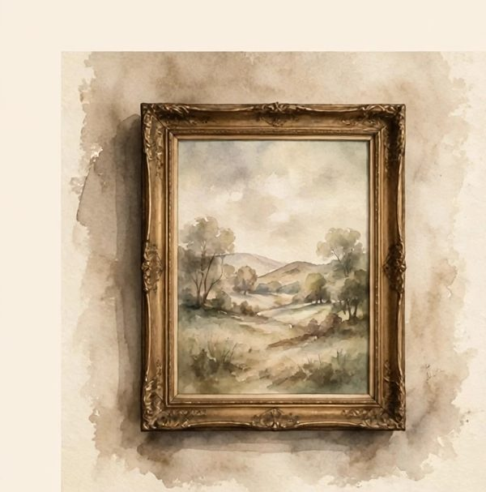
A tall portrait frame holding a soft landscape, hung first on the gallery wall.
This house begins with an admission, and it is a cheerful one: nobody builds a life alone. Behind every keeper there are other hands — hands that held the ladder, mixed the mortar, pointed at the horizon and said, there, that way is worth walking. This gallery keeps their portraits. Not statues, not monuments: portrait rooms, each one furnished the way its person furnished the keeper's life, with a chair, a lamp, the tools they left behind. You are invited to walk slowly. The rooms are not in order of importance, because importance was never the measure the house used to keep them.
A portrait, in this house, is not a claim about a whole person. It is the keeper's honest memory of one shaping presence: the way a voice sounded in a kitchen, the standard a pair of hands quietly kept, the door a stranger held open at exactly the right minute. People are larger than the rooms kept for them, and the house knows it. What hangs here is not who they were in full, but what their presence did to the grain of one particular life — where it bent, where it strengthened, where it learned a new direction.
Some of these rooms will be bright to enter. Some will be plain. One or two the keeper visits rarely, and the house permits that without comment. There are teachers here, and kin, and friends of one season, and people who shaped by refusing, by leaving, by being a warning written kindly in the register. Walk the whole gallery before you judge any single room. And when you reach the far end, you will find one frame hung empty and ready — because the shaping is not finished, and neither, the keeper insists, is the shaped.
2A House Built by Many Hands
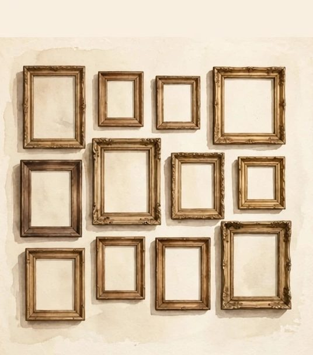
A wall of frames in different woods and sizes, none of them matching, all of them kept.
Stand in the entrance hall and look at the wall of frames, and the first thing you notice is that none of them match. Walnut beside pine, gilt beside plain oak, a small square frame keeping company with a tall narrow one. That is exactly right. The people who shape a life do not arrive as a matched set, chosen from one catalogue, delivered in one season. They arrive across decades, from different countries of the keeper's life, speaking different languages of care, correction, example and accident, and the wall honors them by refusing to make them uniform.
A house built by many hands has a particular honesty in its construction. No single beam explains the roof. No single craftsman can walk the corridor and say, truthfully, all of this is mine. The keeper tried, once, in younger years, to draw up a plan showing which parts of the life were self-made, and the drawing kept failing in the hand: the straight lines ran through other people's workshops, the foundations rested on ground others had cleared. In the end the plan was folded away, and this gallery was built instead, which is the same admission made useful.
This is not a confession of weakness, and the house asks you not to read it as one. A violin is not diminished because many hands shaped its making, from the forester to the varnisher to the first teacher who placed it under a child's chin. It is, if anything, the opposite: the more honestly the hands are counted, the more remarkable the music becomes. The keeper's life is the instrument here. These rooms simply name the hands, one by one, in the plain belief that a life examined with its makers in view is a life better understood, and better carried.
3The Portrait Rooms
Why rooms, and not photographs in an album, or names in a list? Because a room is the honest size of a person's influence. An influence is not a fact you file; it is a climate you lived in, sometimes for years, sometimes for an afternoon that rearranged the furniture of every year after it. So each shaper keeps a room here: walls the color of their presence, a chair worn the way they wore their welcome, a window facing the direction they taught the keeper to look. You do not merely learn about them. You stand where their shaping happened.
The rooms are kept in use, and this matters more than any inscription on the frame. A portrait room is not sealed behind glass. The keeper still sits in some of these chairs to think. Some of the tools left here are still taken down and used at the workbench of an ordinary week. A room kept in use says something a monument cannot: that the shaping is not finished business, locked in the past, but a living arrangement between who the keeper was, who did the shaping, and who is being shaped still, in both directions, down the years.
You will notice that no room in this gallery is larger than a life can actually hold. There are no cathedrals here for the great benefactors, no cupboards for the brief ones. A stranger who spoke one necessary sentence on a train keeps a room the same measure as a parent's, because the house measures by what the presence did, not by how long it stayed or how loudly it announced itself. This surprises visitors. It stopped surprising the keeper long ago, somewhere around the year the brief rooms began proving, decade after decade, to be load-bearing.
4No Room Here Was Built Alone
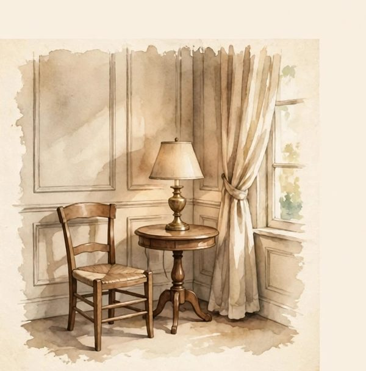
A portrait room with one chair and a lamp, kept ready for an ordinary visit.
Above the inside of the entrance door, where only someone leaving would see it, the house has fixed its one rule in plain lettering: no room here was built alone. It is not a slogan of humility. It is a builder's note, a matter of structural fact. Every room in this gallery, including the keeper's own at the far end, went up with other hands on the beams — steadying, suggesting, sometimes simply standing in the doorway with tea and the patience that lets a wall rise straight. The rule is placed where it is so that the keeper reads it on the way out, into every ordinary day.
It helps to say plainly what the rule does not mean. It does not mean the keeper built nothing, or that the life is a committee's work, endlessly minuted and nobody's. Ask any carpenter: a house raised by many hands still stands or falls by the one who lives in it, chooses the repairs, keeps the roof honest. The keeper's hand is in every room here — choosing, resisting, misunderstanding, returning years later to understand. The gallery holds both truths at once, the way a well-built wall holds both brick and mortar, and it refuses to trade either one away.
There is a freedom in the rule, and the keeper will tell you it arrived late and stayed for good. A person who believes their rooms were built alone must defend every wall personally, forever, and call every crack a failure of character. A person who knows better can simply get on with the repairs, grateful for the original workmanship where it was good, honest about it where it was not. The rule over the door is, in the end, a permission: to have been helped, to have been hindered, to have been shaped — and to walk out under it, unembarrassed, into the weather.
5Shaping Is a Word for Weather and for Hands
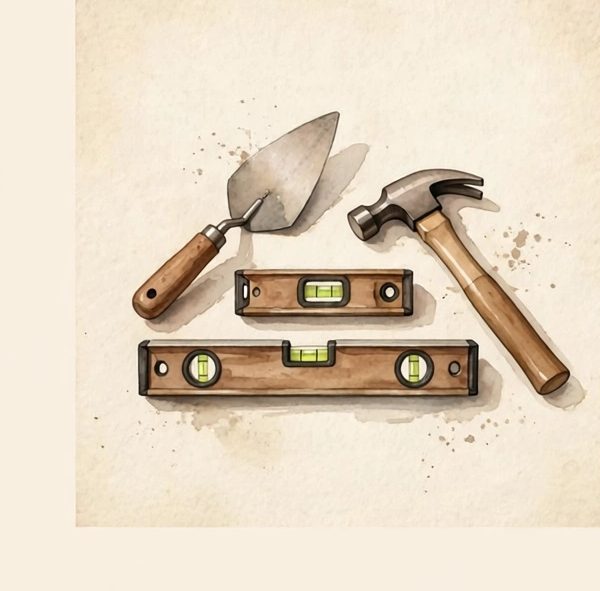
The tools of building laid out in a row: a trowel, a level, a hammer.
The house uses the word shaping with care, and it is worth pausing on it before the gallery goes further. Shaping is what weather does to a coastline and what hands do to clay, and a life receives both kinds. Some of the people in these rooms shaped the keeper deliberately, the way a craftsman shapes a beam, with intention and a picture in mind. Others shaped the way weather shapes: by simply being there, season after season, their climate of temper, humor and habit wearing the keeper's edges into their present, permanent form.
Neither kind is worth more than the other, and the register refuses to rank them. The deliberate shapers get their thanks spoken aloud, at least, because intention can be recognized and answered. The weather-shapers are harder to thank, being often unaware, sometimes long gone, occasionally impossible to find. Yet measure the keeper's patience, or the keeper's suspicion of easy promises, or the exact way the keeper laughs, and you are measuring climates as much as lessons: years of somebody's ordinary presence, absorbed the way a hillside absorbs rain, without minutes being taken or consent being asked.
One more caution about the word, and then the gallery can proceed. Shaping is not making. Clay does not choose, but a keeper does, daily: what to keep of a lesson, what to quietly decline, what to carry for twenty years before discovering it was ballast and setting it down. Every portrait in this house is therefore a collaboration, whether the other party knew it or not. The hands and the weather did their work. The keeper did the keeping. Both halves of that sentence are load-bearing, and the house will hold you to reading both.
6Some Stayed a Lifetime; Some Stayed an Hour
Visitors often assume the gallery is arranged by duration: the long rooms first, the brief ones somewhere near the back, by the brooms. The register corrects them gently. Here, a grandmother's room stands beside the room of a man who shared one train compartment and one conversation, and neither room apologizes for the company. Duration is simply the wrong measure for shaping. Some people stay a lifetime and shape by accumulation, the way a river shapes a bank. Others stay an hour and shape the way lightning shapes a field: briefly, and the field is never unmarked again.
Consider what an hour can hold. A sentence at a bus stop that reroutes a career. A stranger's unembarrassed kindness on the worst afternoon of a year, remembered at every later worst afternoon. A teacher met once, at a workshop, whose single correction is still being applied forty years on. The keeper keeps a list of these, in pencil, because the list keeps growing: people encountered at thresholds, in waiting rooms, across one shared table, who arrived precisely when the clay was soft and pressed one clear thumbprint into it, and walked on, unaware.
The lifetime ones are not diminished by this company, and the house is careful to say so. The slow shaping of decades is its own kind of weather, and no lightning strike replaces it. But the gallery's rule stands: a room is earned by what the presence did, never by how long the presence lasted. When you walk these halls, do not ask first how long each person stayed. Ask what in the keeper is different because they passed through. Some answers will take a corridor to tell. Some will fit in one sentence, and bend the corridor anyway.
7The Rooms Are Kept, Not Worshipped
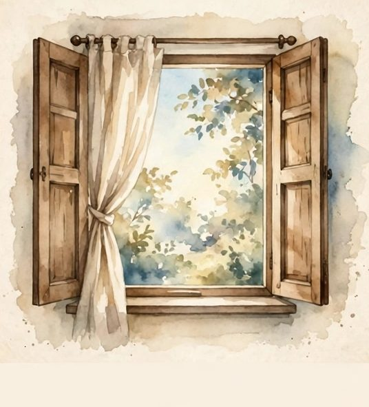
A bright window with wooden shutters, opened onto the morning.
The rooms are kept, and the house insists on the plainness of that word. Kept means dusted, aired, visited on ordinary days, the lamp checked, the chair repaired when its leg works loose. It does not mean worshipped. There are no ropes across these doorways, no hushed voices, no candles lit in permanent attendance. A visitor who begins to speak of any shaper in the tones reserved for saints will be offered tea and a gentle change of subject, because worship is one of the few things this gallery is organized to prevent.
Worship, the keeper has learned, is a way of stopping a relationship while pretending to honor it. A person turned into a statue can no longer be argued with, caught up with, or forgiven anything ordinary; they can only be obeyed or toppled. The people in these rooms were better than statues and more useful: they were wrong sometimes, tired sometimes, magnificent mostly in unphotographed moments. Keeping their rooms in daily use — sitting in the chairs, borrowing the tools, disagreeing with the furniture arrangement — is how the house keeps them people, which is the only form in which they can go on being company.
So walk in. Sit down where it helps. The keeper does, most evenings, in one room or another, with the undemanding gratitude of someone visiting an old friend's house rather than a shrine. What is preserved here is not perfection but presence: the standard a pair of hands kept, the joke that still works, the correction that still stings productively. A room kept is a relationship continued on honest terms. A room worshipped is a relationship ended and gilded. This house chose, long ago, which of the two it was building.
8Enter Without a Speech Prepared
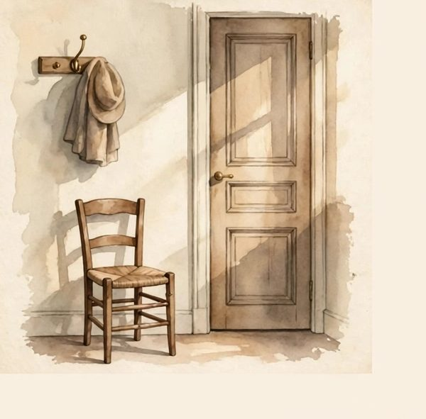
A guest chair by a door, a coat hook beside it, morning light across the floor.
New visitors sometimes arrive with a speech prepared, and the house can tell within a sentence. It is usually a fine speech: gratitude itemized, influences ranked, debts of the heart acknowledged in polished paragraphs. The keeper listens kindly, offers the good chair, and then, when the speech is done, suggests starting again without it. Not because the feelings are wrong, but because a prepared speech is a performance, and this gallery runs on something slower and less decorated: the plain act of entering a room and seeing, freshly, what is actually there.
Entering without a speech means letting each room be what it is before deciding what it means. The father's room may hold pride and one unhealed awkwardness side by side, and both are allowed to be furniture. The teacher's room may be smaller than the speech promised and more important than it said, in a corner the speech never mentioned. Prepared gratitude, like prepared grief, tends to describe the visit we expected rather than the one we are having. The house prefers the visit itself, unscripted, even when it comes out halting and plain.
So consider this the gallery's only instruction, lettered nowhere, enforced by nobody: come as you are, look slowly, say what is true in the order you find it. Thanks spoken here are short and specific, because specific is the native language of these rooms. One true sentence about one real thing a person did will keep a room warmer than an hour of ceremonial praise. The keeper learned that from the shapers themselves, most of whom would have been embarrassed by speeches, and several of whom would have interrupted one to put the kettle on.
9The Keeper Knows Them by Their Furniture
Ask the keeper how a shaper is recognized, years later, and the answer will not begin with a face. It begins with furniture. The keeper knows them by what their presence left arranged in the life: a workbench habit here, a standard of hospitality there, a way of arranging a difficult conversation the way one particular person arranged chairs before guests arrived — facing each other, never in a row. Faces fade in the ordinary way of memory. Furniture remains, because furniture is used daily, and what is used daily does not get the chance to be forgotten.
This is why the portrait rooms are furnished rather than framed portraits in the usual sense. Each room keeps the objects its person would have recognized as theirs: the tools they worked with, the chair they favored, the lamp they read by, the exacting table they set. Stand in the doorway and the room identifies its keeper-of-the-moment more reliably than any likeness could. A likeness shows how someone looked while the light was arranged. A furnished room shows how their presence was arranged, which is the part that went on shaping long after the sitting ended.
There is a tenderness in this the keeper does not bother to hide. To know someone by their furniture is to know them the way households know each other: not by declarations but by wear patterns, by the spoon that lives in the wrong drawer, by the coat hook that was always theirs. When the keeper walks the gallery at evening rounds, the recognition is immediate and unceremonious, like coming home through a familiar street. These were the arrangements. These were the hands. The rooms keep both, and the keeping is the portrait.
10Not Everyone Gets a Portrait
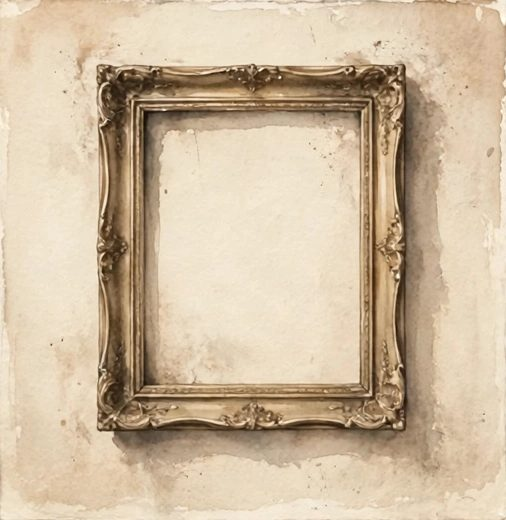
An empty frame kept dusted on a wall, waiting for its portrait.
It must be said early, because visitors ask: not everyone gets a portrait. The gallery is not a census, and the keeper is not under orders, from gratitude or guilt or good manners, to hang a room for every person who ever crossed the corridor. Some people passed through the life the way weather passes over a roof in a mild season — noted, even enjoyed, and gone without bending a single beam. To hang rooms for them would be decoration, and decoration, in a house built on honest accounting, is a small kind of lie.
The standard is not importance in the world's sense, nor closeness in the family's sense. It is shaping, plainly identified: something in the keeper is measurably different because this person was there. A different standard kept, a fear retired, a direction taken at a fork, a sentence still in daily use. Where nothing in the grain changed, no room is owed, and none is hung, and no apology accompanies the absence. The register is equally firm in the other direction: where the grain did change, the room is hung even if the person was difficult, distant, disapproved of, or met exactly once.
Visitors sometimes worry that this honesty is cold. The keeper has come to believe it is the opposite. A gallery where every acquaintance hangs is a gallery that means nothing by hanging anyone; the honor inflates until it is worthless. Here, the rooms are few enough to be true and furnished well enough to be useful. When the keeper stops at a doorway, it is because something real is kept inside. The empty stretches of wall between the frames are not failures of gratitude. They are the measure that makes the frames mean something.
11A Gallery, Not a Courtroom
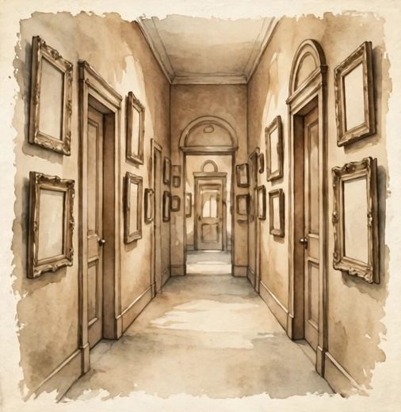
A gallery corridor of doors and frames in even, unjudging light.
Of all the house rules, this one is lettered largest in the keeper's own hand: a gallery, not a courtroom. The rooms are hung to be understood, not to be prosecuted. Nobody is summoned here to answer for a life. There are no dockets in the corridor, no evidence bags, no verdicts being drafted in the back office. A visitor who arrives hoping to watch someone finally be judged in these rooms will be disappointed, and the house is content to disappoint them. Understanding is slower work than judgment, and considerably more useful to the living.
This does not mean the gallery flatters. The register records the shaping as it happened, including the shaping that hurt, the standards that were impossible, the absences that did their own quiet construction. Honesty is not suspended here; it is simply aimed differently. A courtroom asks, who is to blame, and stops asking when it has an answer. A gallery asks, what happened to the grain of this life, and what grew from it, and it keeps asking for decades. The first question ends conversations. The second one is how a keeper learns to carry a complicated inheritance without either worshipping it or setting it on fire.
There will be rooms further down this corridor where harm is named, plainly and once, in the house's own words. Notice, when you reach them, that naming is not sentencing. The portrait records an influence; it does not pretend to be a judgment on a whole person, whose other rooms, in other people's galleries, the keeper has never seen. This restraint is not softness. It is accuracy. A gallery keeps what it knows. What it knows is how one life was shaped. The rest belongs to other houses, and to whatever court, if any, keeps those records.
12Gratitude Is Not a Mortgage
The last room of the first hall is the smallest, and the keeper will tell you it took the longest to build. Its subject is gratitude, and specifically what gratitude is not. Gratitude, in this house, is not a mortgage. A mortgage is a claim held by one party over another's house, discharged in payments, enforceable on default. The shapers hold no such document. Nobody who ever steadied a ladder in this life owns a share of the roof, and the keeper owes no installments of obedience, agreement or imitation to anyone whose portrait hangs here.
This is said without a trace of coldness, and the house is careful about the temperature. The keeper is grateful — daily, specifically, in the plain currency of kept rooms and spoken thanks. But gratitude that must be paid forever is not gratitude; it is rent, and rent turns every benefactor into a landlord and every memory into an invoice. The shapers themselves, the honest ones, never asked for that. They gave what they gave in the currency of their own days, and most of them would refuse, embarrassed, to be repaid in the coin of a life lived to their specification.
So the rooms are kept free and clear. Thanks are given the way the best gifts in these halls were given: once, wholly, and without a ledger. The keeper walks the gallery owing nothing and grateful for nearly everything, and has found, over the years, that these two facts strengthen each other. A debt can be resented. A gift cannot. This gallery is built of gifts — some of them rough, some of them accidental, all of them finished being given. What the keeper owes is only the keeping, and the keeping, as you will see, is gladly paid.
13The First Hands
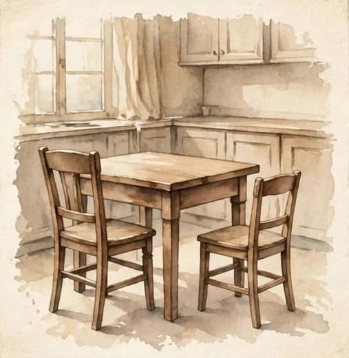
Two chairs at a kitchen table, one of them smaller, in early light.
The second hall begins where every life begins: with the people who were there before there was a keeper to choose anything. The first hands. Before memory had furniture, before the register had a single entry, there were presences — the ones who fed, carried, taught the hands their first work, and set the emotional weather of the earliest rooms. This hall keeps their portraits with a particular tenderness, because they shaped the keeper before the keeper had any say in the matter, and that fact deserves both honor and a clear eye.
To be shaped before choosing is the universal condition, and this hall refuses to treat it either as destiny or as grievance. The first hands set the grain's original direction the way the first cut sets a board's: everything after works with it or against it, but nothing works in ignorance of it for long. The keeper's adult life can be read, in part, as a long negotiation with these first arrangements — keeping this one, planing down that one, discovering at forty what was installed at four and deciding, at last, what to do about it.
Walk slowly here. These are the oldest rooms in the house, and their light is the light of kitchens and workshops and early mornings, because that is where the first shaping happened: at tables, over tasks, in the middle of ordinary days that nobody present knew were foundational. The portraits in this hall are the least formal in the gallery and, the keeper suspects, the most visited. Beginnings exert a gravity that does not weaken with distance. It only becomes, with the years, easier to see clearly, and to thank accurately.
14The Ones Who Were Simply There First
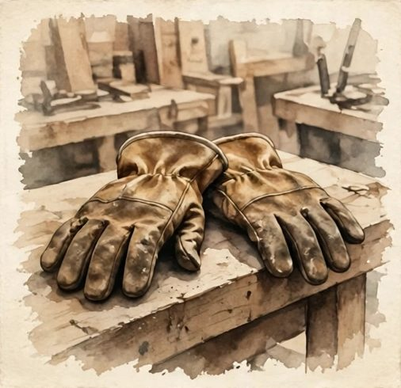
A pair of work-worn gloves resting on a bench, shaped by years of use.
Some of the portraits in this hall have no single moment attached to them, no story that begins on a particular day. Their shaping was simply presence, repeated until it became architecture. The ones who were there first did not, for the most part, deliver lessons. They provided the conditions in which lessons could later be recognized: a house where questions were answered or were not, a table where work was honored or was not, a climate of temper that taught a small observer what weather to expect from the world, and therefore what to carry against it.
The register is honest about how little of this was chosen by anyone. The first hands were not auditioned. They were whoever history, geography and circumstance placed at the beginning of this particular life, with their own beginnings behind them, shaped by hands the keeper never met. This hall therefore hangs its portraits without the fiction that the arrangement was anyone's plan. It was a dealt hand, all around. What the gallery keeps is not approval or complaint about the dealing, but the record of what those first presences built into the foundations, for better and for worse, while meaning simply to get through their days.
There is an odd comfort in this room, and visitors often remark on it. To understand that the first shaping was largely unchosen — by the shaped and by the shapers alike — loosens something. Blame finds little purchase here, and neither does the fantasy of the perfect beginning. What remains is the plain, workable truth: these were the first hands, this is what they knew, this is what they passed on, and the rest of the gallery, hall by hall, is the story of what the keeper eventually did with the inheritance.
15Hands That Taught the Hands
Watch a keeper's hands at any skilled task — at a workbench, at a stove, at the mending of anything broken — and you are watching, in part, a pair of older hands that are no longer in the room. Hands teach hands. The grip on the tool, the patience with the material, the economy of motion that looks like talent and is actually inheritance: these passed from one set of hands to another across years of small demonstrations, most of them never announced as teaching at all. This room keeps that transmission, the quietest curriculum in the house.
The teaching was mostly in the doing, side by side. A child stationed at a counter, given the safe end of the work. An apprentice handed the real tool sooner than caution advised, because the older hands understood that competence is built from trusted attempts. The keeper can still feel the corrections: a wrist adjusted without a word, a pace slowed by example rather than instruction. Nothing in this room was learned from explanation alone. It entered through the hands, which is why, decades later, it has never left through them either.
Not everything the first hands taught was worth keeping, and the house is plain about that too. A hurried grip, a corner cut, a way of forcing a joint that ought to be persuaded — these were transmitted with the same fidelity as the virtues, because hands do not edit what they pass on. The keeper's later work included learning to tell the inheritance apart: keeping the steadiness, retiring the forcing, and doing it without contempt for the teachers, who passed on, in the end, exactly what had been passed to them. The chain improves link by link, or it does not improve at all.
The Portrait Desk
One desk receives all correspondence for this house — questions, corrections, and word of any portrait room: a hand remembered, a lesson landed late, a stranger never thanked, and how the gallery looks from the far end. It is read in the order it arrives.
16The Voice You Still Hear in the Kitchen
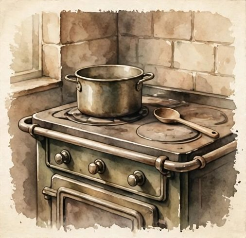
A stove, a pot, and a wooden spoon at rest in a warm kitchen.
Every keeper carries at least one voice that never quite leaves the kitchen. It is not a haunting; the house is firm about that. It is the remembered sound of the person who presided over the earliest rooms, calling the day's small orders: taste this, hand me that, mind the pot, sit, eat, you are thinking too much. Decades later, in a kitchen of the keeper's own, on another continent of the life, the voice still arrives on schedule at the stove, and the keeper still, half the time, obeys it before remembering it can be negotiated with.
What the voice carries is rarely its literal instructions, useful as some of those remain. It carries a whole manner of running a household and, inside that, a manner of running a life: whether mess is an emergency or an errand, whether guests are an honor or an interruption, whether feeding people is the main business or an afterthought squeezed around it. The keeper has renovated most of these arrangements over the years. But the voice remains the original acoustics of home, and every later kitchen is measured, faintly, against the room where that voice first set the standard.
The house keeps this portrait fondly and without superstition. The voice is not a command from beyond anything; it is memory doing its ordinary, faithful work, and the keeper is free — this took years to learn — to answer it back. Some evenings the keeper does: cooks the dish the new way, leaves the pot unwatched a moment longer, and finds the sky does not fall. The voice, being memory and not a warden, does not object. It simply keeps its place at the stove of the inner kitchen, where it is welcome, and where its recipes, amended or not, are still the house's first cookbook.
17What Was Modeled, Not Said
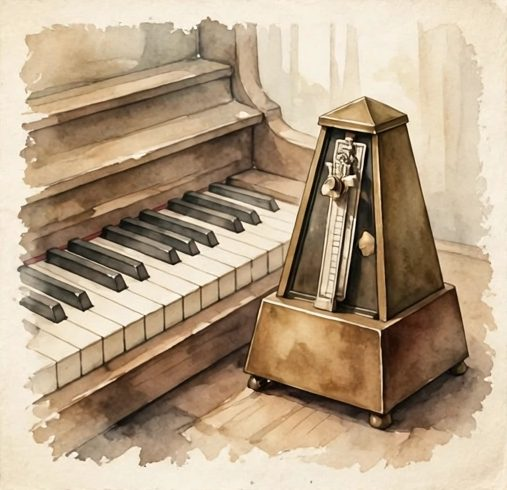
A piano keyboard in soft light, a metronome standing beside it.
Ask the keeper where the deepest lessons of the first hall came from, and the answer is rarely a sentence anyone said. It is what was modeled. The child in the earliest rooms was a full-time observer with no duties except watching, and watching is an education that never announces itself. How the first hands treated a tradesman at the door. What they did with a disappointment at the table. Whether an apology, in that house, was a tool in regular use or an artifact nobody could locate. All of it was curriculum, delivered daily, examined never, absorbed completely.
This is why the register treats the modeled lessons as the load-bearing ones. A stated rule can be argued with, and eventually most are. A modeled pattern simply becomes the shape of normal, and normal is the hardest thing in a life to revise, because it does not feel like an opinion. It feels like weather. The keeper spent years discovering which of the house's weathers were inherited climates and which were genuinely the keeper's own sky. The work is not resented. It is, the keeper says, the main renovation project of any adult life, and it is never quite finished.
The portrait here is therefore double: it honors the modelers, and it instructs the modeled — which is to say, everyone, since the keeper now models for others in turn, in kitchens and workshops of the present day, under the observation of eyes just as unblinking. There is no opting out of being an example; there is only choosing, a little more consciously each year, what the example is. The first hands did not know the full weight of their demonstration. The keeper, having hung this portrait, no longer has that excuse, and counts the knowledge a gift rather than a burden.
18The Standards Set at a Table
Every household keeps a standard somewhere, and in the keeper's first house it was kept at the table. Not the food, though the food mattered. The standard was the arrangement itself: who sat where, what was said and never said over a meal, how a guest was received, how a failure of the day was or was not permitted to follow anyone into the room. A child learns the constitution of a world from such arrangements long before anyone explains the word standards, and the lessons set like cooling iron.
Some of those table standards the keeper has kept for life, and gladly: that people are fed before they are questioned, that the cook is thanked by name, that a meal can hold bad news without becoming it. Others were revised at the keeper's own table, in the keeper's own years, with the full knowledge that revision is not betrayal — the first hands revised their own inheritances too, in their time, at their tables. What survives revision is the underlying conviction the table taught first: that how a household arranges its ordinary rituals is not decoration on a life. It is the life, at its most repeatable.
Visitors sometimes find this room fussy, all its places set in a house nobody eats in anymore. The keeper disagrees. The room is a record of the first government the keeper ever lived under, and its laws — hospitality, order, the dignity of being fed — turned out to be exportable to every later household, workplace and friendship. When the keeper sets a table now, for anyone, the old standard is somewhere in the hands doing it. The portrait hangs here so the keeper remembers that this, too, was taught, and by whom, and at what ordinary, unceremonious cost of care.
19Kindness Learned by Watching
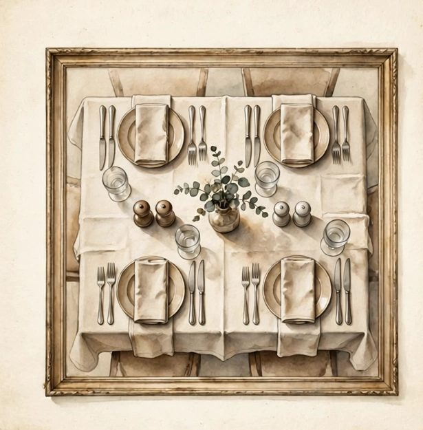
A table set to an exacting standard, every place laid in order.
There is a kind of teaching that never uses the voice at all. It uses the eyes of the watcher. The keeper learned kindness in the first hall the way most durable things are learned there: by watching it practiced on people who could do nothing in return — the neighbor with the tedious sorrow, the tradesman who had made an error, the relative nobody else had patience left for. Nobody announced these occasions as lessons. That is precisely why they worked. Kindness performed as instruction is theater. Kindness witnessed as habit is education.
The register notes the specific gravity of this room. Of all the shaping in the first hall, this may be the portion the keeper is most unwilling to trade away, because it was acquired before cynicism had a vote. The small observer at the table's edge took notes that have never been revised: this is what people do with the inconvenient; this is how a door is answered; this is the tone used for someone who has failed. Later years added footnotes, corrections, one or two hard amendments. The text itself has held, in the keeper's own conduct, more faithfully than any rule the house ever posted.
It would be tidy to say the watchers in this room were saints, and the house declines the tidiness. They were tired, flawed, occasionally short with each other in the very evenings they were patient with strangers. The kindness was real anyway — perhaps more instructive for being visibly effortful rather than temperamental. The keeper, who is now watched in turn by smaller eyes than the keeper's own, keeps this portrait at eye level in the hall, as a standard and a warning in one: they are always learning. The only choice is what.
20Strictness, and What It Actually Taught
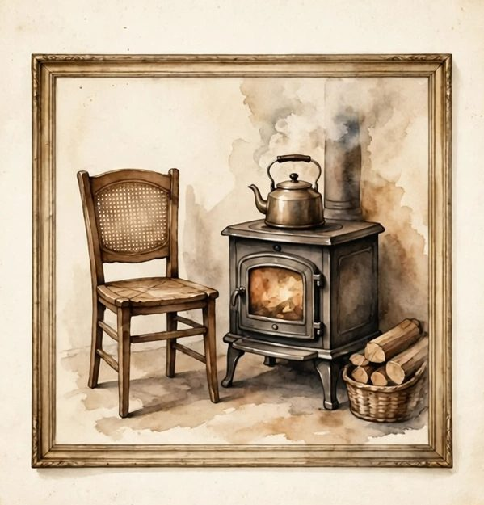
A chair by a warm stove, a kettle on, in a room that keeps its own hours.
Every gallery honest about the first hands must hang this portrait too: strictness, and what it actually taught. There was strictness in the keeper's first house — about work, about hours, about the difference between done and nearly done — and for years the keeper's account of it was simple and mostly negative. The room was hung late, after the keeper had lived long enough with the results to read them properly. What the strictness actually taught, beneath its weather, was not fear, though fear was in the forecast often enough. It taught that standards exist independent of mood, and that a person's word about a finished task can be made reliable.
The register is careful here, because this room is easy to hang dishonestly in both directions. Sentimentality would gild the strictness into pure virtue, and the keeper refuses: some of it was excess, some of it landed on a child as weather lands, without malice and without mercy, and its costs are recorded elsewhere in this hall without flinching. But the opposite dishonesty — writing the whole portrait off as damage — fails the evidence of the keeper's own adult life, where the capacity to finish, to be exact, to keep a standard on a tired day, walks in daily and does its work like a well-trained hand.
What the room finally teaches is discrimination, which may be the strictness's own best product. The keeper learned to keep the standard and retire the fear: to run an exacting house on warm fuel. It took decades, and the portrait is hung at the point in the hall where visitors have seen enough of the first hands to hold both truths without dropping either. Strictness taught the keeper that a bar can be high and a room can be kind. The first house managed the first half. The keeper's house aims, daily, at both.
21The Absent Ones Also Shaped the Rooms
Not all the first hands were present. This room belongs to the absent ones: the parent who was elsewhere, the grandparent who was a photograph and a handful of stories, the figure whose chair stood at the table in every account and empty in every memory. The house hangs this portrait without melodrama, because absence, it turns out, is also a form of shaping — quieter than presence, working in negative space, but as real in the finished building as any beam. Rooms are shaped by the walls that are there. They are also shaped by the doorway that was left open and never filled.
What absence taught, in this house, was a particular set of skills and weather: self-reliance taken up early, a talent for imagining the missing person's verdict, a lifelong sensitivity to who is not in the room. The register declines to call these simply wounds or simply strengths. They are both, in proportions that vary by decade, and the keeper has stopped trying to settle the ratio. What matters to the gallery is accuracy: the absent ones shaped the keeper, and the portrait records the shaping without pretending the absence was a presence in disguise, or a presence merely an absence with better publicity.
Visitors sometimes ask whether this room should hang in a hall of honor at all. The keeper's answer is the house's answer everywhere: the gallery is not an honors list. It is a record of what built the building. The absent ones are in the foundations whether the keeper thanks them, grieves them, or simply notes the fact at evening rounds and moves on. The portrait is hung at the same height as the others, lit the same, dusted the same. Absence, honestly recorded, takes up exactly the space it actually took up. No more, and — the keeper insists on this clause — no less.
22Love, Entered in the Register Without Ceremony
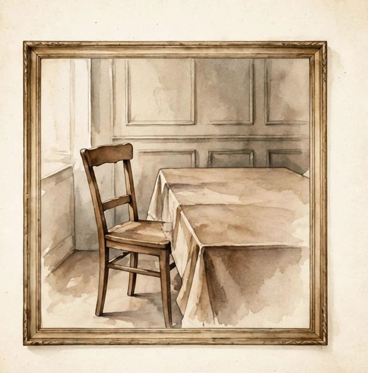
A warm kitchen doorway, lamplight falling across the threshold.
If the register kept a column for love, it would be the longest in the book, and the house is oddly shy about saying so in ceremonial language. The love in the first hall was mostly entered without ceremony: in meals that appeared on difficult days as if by weather, in mended clothes, in someone awake at an unreasonable hour because a small person's fever had rearranged the night. Nobody made speeches about it. It was simply the medium the first rooms were built in, the way water is the medium a fish would be last to mention.
This room exists to mention it, once, on the record, because the keeper noticed something in middle years: it is possible to catalog an entire childhood of shaping — the standards, the strictness, the lessons, the lacks — and somehow file the love under atmosphere, uncounted, as if it were not itself the largest single fact of the construction. It was. Underneath every other entry in the first hall's register runs this one, in the unceremonious handwriting of packed lunches and waited-up-for evenings: the keeper was loved, in the dialect the first hands spoke, and the whole building stands differently because of it.
The portrait is deliberately plain: no halos, no swelling music in the corridor, because the love it records was plain in exactly this way, and plainness is its credential. It did its work without announcing itself, and much of the keeper's later capacity — to trust a room, to feed people first and question them later, to believe a house can be safe — is this love, still on duty, long after its original shift ended. The register enters it without ceremony, as it was given. Then it closes the book gently, the way the first hands closed the door at night: completely, and without a sound.
23The First Hands Were Also Beginners
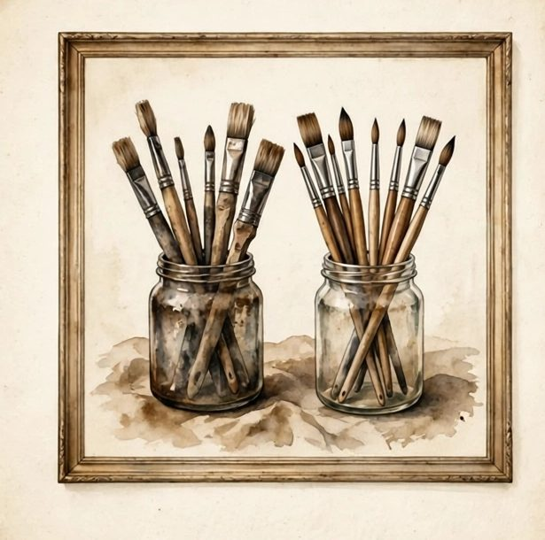
A pair of brushes standing in jars, one of them worn, one of them new.
The final turn of sympathy in this hall, and perhaps its most important room: the first hands were also beginners. The people who shaped the keeper's earliest rooms were, at the time, young at their work — new parents, new teachers, new arrivals at adulthood itself — working without a manual, in weather of their own, shaped by hands one generation further back that the keeper never met. The portrait insists on their inexperience not as an excuse but as a fact of the record, because it changes the temperature of everything else in the hall.
A beginner's work has a particular signature: real skill beside real error, confidence in the wrong places, tenderness and clumsiness sharing the same pair of hands. Seen from the keeper's later vantage — by a keeper who has since been a beginner at shaping others, and has felt the exact weight of a small person's total attention — the first hall reads differently than it did at twenty. Judgments that were once simple become accurate, which is a more demanding thing. Some entries in the register were revised. A few were reversed entirely. None of this required the keeper to pretend the work was flawless. It required only the recognition that it was early work, done by people still being built themselves.
This is, the house believes, the correct final light for the first hall: the light of the workshop, where everyone is mid-apprenticeship. The first hands were not gods and were not villains; they were the previous shift, doing the shaping with the tools their own shapers left them. The keeper's generation now holds the tools. Down the corridor, in later halls, are rooms where the keeper does the shaping and is, inevitably, a beginner at it. The portrait hangs here as a standard of interpretation for the whole gallery: read every shaper, including the keeper, as a person in the middle of their own unfinished construction.
24Honor Them Without Freezing Them
The first hall closes with an instruction the keeper gives every visitor, and gives the keeper's own reflection most often: honor them without freezing them. To freeze a shaper — in the hero's pose or the villain's, in the year of their greatest kindness or their worst failure — is to stop the portrait from doing its work. The people of the first hall were alive across decades, changing, aging, revising themselves in ways the earliest rooms never saw. The gallery's portraits are of the shaping as it was when it happened. The persons themselves kept walking, and the house honors that by refusing to embalm them at the scene.
In practice, honoring without freezing means the register stays open. A portrait may be annotated in later years: this one softened; this one, understood at last; this one, stranger than ever and somehow nearer for it. The keeper has rehung several of the first hall's portraits at different angles across the decades, and expects to rehang them again. Nothing in the gallery is varnished shut. Even the dead — especially the dead — are allowed their full size in memory: larger than their best year, larger than their worst, and larger, certainly, than any single room the keeper can furnish for them.
So the hall ends not with a monument but with a practice. Honor: keep the rooms, say the thanks, record the shaping exactly. Without freezing: hold the record open, let the people remain people, and let the keeper's understanding ripen at its own pace toward whatever it becomes. The corridor beyond this hall leads to teachers, friends, strangers and the difficult rooms, and the same double instruction travels with it, written in the keeper's hand on the inside of every door: kept, and not worshipped; named, and not sentenced; loved, where love is true, and left unfrozen either way.
25Teachers
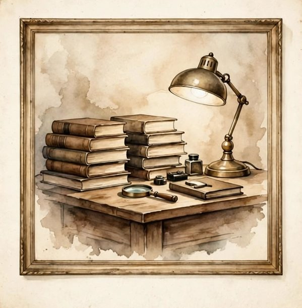
A wooden desk with books and a lamp, set ready for a lesson.
The third hall belongs to the teachers, and the keeper asks visitors to take the word in its widest honest sense. Some of these portraits are of schoolteachers, with classrooms and registers of their own. Others are of the unofficial faculty: the master at the workbench, the aunt who taught the keeper to read a map and a mood, the older boy two streets over who demonstrated, once, how a thing is done properly and never knew he had held a class. What qualifies them for this hall is not a title. It is that they taught, and the teaching held.
Teaching, as this hall understands it, is a rarer gift than knowledge. The world is full of people who know things; the gallery is hung for the ones who could make a knowing portable — break it into steps a beginner's hands could follow, correct without crushing, and aim a whole person, sometimes, at a direction they could not yet see for themselves. The keeper's life divides, in several places, into before and after a teacher's intervention as cleanly as it divides anywhere. This hall keeps those dividing lines, and the people who drew them, in good light and in no particular rank.
Walk it as a student would: slowly, and prepared to be assigned something. The portraits here are unusually practical. Several rooms smell of chalk, or of machine oil, or of the particular paper of a much-annotated book. That is fitting. Teachers shape through the work itself, and their rooms in this house are workshops as much as portraits. When you leave this hall, the keeper hopes, you will be carrying at least one exercise you did not arrive with. That is not the gallery being sentimental. It is the teachers, still teaching, through the only medium they ever needed: a person willing to practice.
26The One Who Saw It First
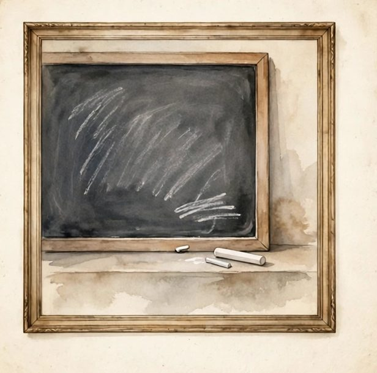
A slate board wiped clean, chalk resting beside it in the quiet.
Before the keeper could do the thing, someone saw that the keeper might. This room belongs to that person: the one who saw it first. It is a particular and under-sung moment in a life, the first time an outside eye — practiced, uninvolved, with no family duty to flatter — looks at the beginner's clumsy work and recognizes, underneath the clumsiness, the real aptitude. Parents may suspect. Friends may encourage. But the teacher who sees it first names it, and the naming works like a key in a lock the keeper did not know was a door.
The register is precise about what the seeing consisted of. It was not praise, exactly; praise is cheap and this teacher was not. It was attention of a professional quality: the work watched properly, the specific strength identified, the next stage pointed out as if it were obvious all along. You have the eye for this. This sentence, or its equivalent in a workshop's dialect — you have the hands, the ear, the patience — has redirected more lives than most ceremonies. The keeper's was one of them, and the portrait is hung at the turn of the corridor where the life itself turned.
What makes the room moving, at this distance, is how little the seer asked in return. The recognition was given in passing, as part of a day's work, and never invoiced across the following decades — which is, the keeper has come to believe, the mark of the genuine article. The ones who truly see a gift in a beginner are rarely the ones who later claim authorship of it. They point, they correct, they move on to the next student. The pointed-at spend lifetimes walking in the direction indicated. This room simply records the pointing, and the hand that did it, with the house's plainest thanks.
27A Teacher for One Year, a Direction for Life
She — or he; the register keeps this portrait deliberately general, because so many keepers have one — taught the keeper for a single year. One school year, one season of apprenticeship, one posting in a long career that moved on, as careers do, to other rooms full of other beginners. By every administrative measure the encounter was minor. By the measure this gallery uses, it was one of the largest events in the building: that one year set a direction the keeper has now walked for decades, and is walking still, in weather the teacher never saw.
What happened in the year was not coverage; other years covered more. It was orientation. The teacher turned the keeper's attention, as one turns a chair, toward the part of the work that mattered — and away from the parts that merely glittered — and the new facing became permanent. Subjects can be caught up later, from books, in solitude. Orientation almost cannot. It arrives, when it arrives, from a person: from watching how they enter the material, what they respect in it, what they refuse to fake. The keeper absorbed a compass in that year disguised as a curriculum, and has navigated by it ever since.
The house hangs this portrait as its standing proof that the gallery's arithmetic is not the world's arithmetic. One year, one person, one direction: the register refuses to call that a small entry. Visitors who have such a teacher in their own past — and most do, once the question is put this way — tend to stop longest in this room, doing their own quiet mathematics. The keeper leaves them to it. Some rooms are less for looking at than for remembering in, and this one, plain as it is, with its single year's furniture, is among the most visited in the house.
28The Craft Passed Hand to Hand
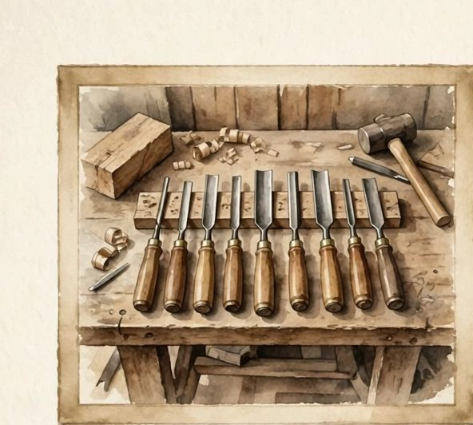
A workbench with chisels laid in a row, worn smooth by passing hands.
Some of the portraits in this hall are not of a person alone but of a transfer: the craft itself, passing hand to hand like a lit lamp carried through a house. The keeper received it in the old way — standing beside someone who had it, watching, attempting, being corrected, attempting again — and this room keeps the tools of that transaction. A craft is not information. It will not fit in a book, though books help. It lives in timing, in pressure, in knowing by the sound when the work is right, and those things travel only along the line of bodies, from a master's hands into a beginner's.
The chain matters to the house, and the register traces it with uncharacteristic pride. Behind the keeper's teacher stand the teacher's teachers, and behind them, hands the keeper knows only as a style of workmanship surviving in old pieces. To hold a craft is to be a link, and a link has obligations in both directions: backward, to keep the standard honestly; forward, to pass the thing on undiminished to hands not yet steady. The keeper failed at this, at first, the way all links do — impatient to be a destination rather than a passage — and the portrait is hung partly as a reminder of the correction.
Stand in this room long enough and its real subject announces itself: continuity. Empires of knowledge fall; a craft crosses centuries on nothing but demonstrated afternoons. The keeper's portion of the chain is one lifetime long, no more, and the work of this portrait is to make that portion feel sufficient and serious. What was passed hand to hand has now to be passed on, hand to hand, by these hands. The room keeps the tools oiled for exactly that purpose, and the register leaves a blank line under this entry, for the name of whoever receives it next.
29Correction as a Form of Respect
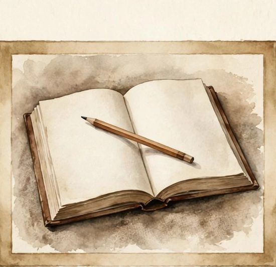
An open book with a pencil laid across it, mid-correction.
The keeper was corrected, in the teachers' hall of this life, more times than can be counted, and remembers almost none of it with resentment. This room examines why. It belongs to the correctors: the ones who marked the work honestly, who said this is wrong, here, for this reason, in a tone that assumed the keeper could do better and intended to stay until better happened. In a world arranged to flatter, their refusal to flatter stands out in the register like a clean line in a smudged drawing. Correction, done this way, is a form of respect, and the keeper learned to recognize it as one of respect's most reliable dialects.
The distinction the room draws is fine and practical. Correction that respects addresses the work and arms the worker: it is specific, it is private, it is accompanied — this is the crucial furniture — by the corrector's evident belief that the corrected can rise to the standard. Correction that merely wounds is also common in the world, and the keeper met that kind too, in other rooms, under other portraits. The difference is visible decades later in what each kind produced: one kind produced better work and a straighter back. The other produced only caution, which looks like humility and is actually a limp.
So the red pencil, in this house, hangs in a place of honor. The keeper, now a corrector of others in turn, keeps this portrait open during that work like a manual: say what is wrong, say why, say it once and clearly, and let your faith in the person be the loudest thing in the room. Some of the teachers here are remembered for nothing else they ever did — one exact correction, delivered at the exact moment the clay was soft. The gallery counts that a complete teaching career, and a distinguished one.
30The Lesson That Took Twenty Years to Land
Not every lesson arrives when it is taught. This room keeps the most famous example in the keeper's collection: a sentence spoken by a teacher in an ordinary hour, noted, half-understood, and filed — which then traveled with the keeper for twenty years, through other countries of the life, before it finally landed. When it landed, it landed completely: in a situation the teacher could never have foreseen, the old sentence stood up in the keeper's mind, fully assembled, exactly fitted to the moment, like a key cut decades earlier for a lock that had only just been built.
The register draws two morals from this, and the room is furnished for both. The first is for students: understanding is not the same as hearing, and the gap between them is not failure. Some teaching is seed rather than harvest, designed — though the teacher may not know it — for a season the student has not reached. The keeper has learned to file such sentences carefully rather than discard them for failing to sprout on schedule. A drawer of unlanded lessons is not a drawer of failures. It is a seed store, and its contents have a way of becoming valuable at the exact moment they are needed.
The second moral is for teachers, and it is the more moving one: you will not be present for most of your results. The sentence that took twenty years to land did its work in a room its speaker never entered, in a life that had long since left the speaker's sight. Teaching, this portrait insists, is an act of faith in the most literal sense — sowing into a future the sower will not inspect. The keeper keeps this room for every teacher who ever wondered whether it took. It took. It simply took its time, the way the truest things in this house usually do.
The Portrait Desk
One desk receives all correspondence for this house — questions, corrections, and word of any portrait room: a hand remembered, a lesson landed late, a stranger never thanked, and how the gallery looks from the far end. It is read in the order it arrives.
31Strict Teachers and Gentle Ones
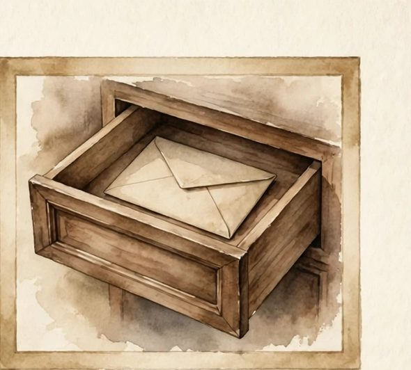
A sealed envelope kept in a drawer, unopened these many years.
The gallery declines, early in this room, to arrange the teachers on a scale from strict to gentle, because the keeper's evidence refuses to cooperate with the scale. The strict one is remembered, on balance, with gratitude that took decades to ripen and is now complete. The gentle one is remembered with a love that needed no ripening at all — and also, mixed into it, a certain regret: for the standard the gentleness never quite enforced, the places where kindness, meaning to spare the keeper, spared the lesson instead. Both portraits hang here, lit the same, and neither is the hall's hero or its cautionary tale.
What the room proposes instead of a scale is a question: what did the manner carry? Strictness, in the good cases, carried a belief in the student's capacity so large it would not accept the student's smaller estimate of it. Gentleness, in the good cases, carried safety — the room in which a beginner could fail audibly, ask the stupid question, show the unfinished work — and without that safety whole subjects stay locked for life. The keeper needed both fuels at different seasons and knows students who needed them in the opposite proportions, which is why the register records manner faithfully and ranks it never.
The practical inheritance is the keeper's own, in the keeper's present work of teaching others: to read the student before choosing the weather. There are mornings to be the exacting one, whose refusal to accept the sloppy draft is the day's real kindness. There are mornings to be the gentle one, whose patience keeps a discouraged beginner in the room one week longer, which turns out to be the week it clicks. The portraits hang side by side at the corridor's turn, two weathers, one climate of respect underneath both, and the keeper salutes them in passing without needing to decide, ever again, which of them was right.
32The Teacher Who Never Knew
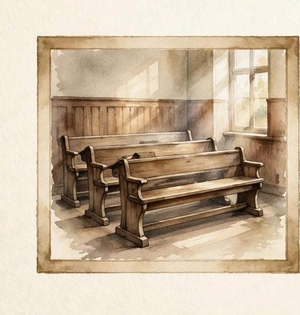
A schoolroom bench in morning light, empty and waiting.
The most quietly astonishing portrait in the hall belongs to a teacher who never knew. Somewhere in the keeper's past is a person who taught a lasting lesson in complete ignorance of having done so: the craftsman observed through a workshop door across a season of errands, the older student whose habits were studied like a textbook by a younger one never introduced, the stranger whose single demonstration — of patience, of precision, of how to lose gracefully — was absorbed entire by a watcher they never noticed. The room is kept for them, and it is, the keeper insists, fully earned.
The register finds a particular justice in this portrait. The teachers who knew get their thanks, when thanks can reach them. The ones who never knew get, from this house at least, the record: your example traveled. It crossed a room, a street, a decade, and it is at work today in hands you never saw, in a life you would not recognize. No application was made for this honor and none could be. It accrues the way the shaping itself accrued — silently, in the ordinary course of being watched by someone whose clay was soft that day.
There is an instruction folded into this room, and visitors tend to leave carrying it, a little sobered, a little steadied. Each of us is this teacher for someone, almost certainly, and will never learn for whom. The lesson we are teaching at this moment, by manner rather than intention, is being absorbed by a watcher we have not noticed, in a corridor we think is empty. The house does not present this as a burden. It presents it as the ordinary physics of the gallery, applying in both directions, down all the halls: you are being shaped, and you are shaping, and neither process sends you a notification.
33Homework for a Lifetime
Every teacher in this hall left homework, whether they called it that or not, and the unsettling discovery of the keeper's middle years is that the assignments are still outstanding. Practice the scales of the craft. Read the difficult book again when you are older. Watch how you speak to people who can do nothing for you. Some of it was set explicitly, in classrooms, with dates attached that have long passed. Some of it was set by example and discovered later, the way one discovers a note left in a coat pocket seasons after the coat was last worn: oh. That was an assignment. It still is.
The room refuses to treat the outstanding homework as arrears. There is no debt collector in this gallery — the house settled that doctrine in its first hall, where gratitude was cleared of mortgages. The homework is better understood as an inheritance of exercises: a set of practices the teachers believed would keep working on whoever kept doing them, for as long as they kept being done. Scales are not finished; they are played. The keeper, at this distance, plays most of them weekly without deciding to, the way one hums. A few are still approached with the old schoolroom reluctance, and get done anyway, out of a loyalty that has outlasted both fear and grades.
What surprises the keeper, reviewing the list, is how the homework changed its meaning while keeping its wording. Practice the thing daily meant obedience at ten. It means maintenance at forty, and something close to devotion later on: the understanding that a life, like a craft, stays in tune only under regular hands. The portrait therefore hangs not over the keeper's past but over the keeper's calendar. The teachers are gone from the room. The homework is on the desk. It will be there tomorrow. That, the register notes, was always the arrangement, and the teachers, who set it knowingly, deserve the credit for designing an education that does not expire.
34Leaving the Teacher's Way Is Not Betrayal
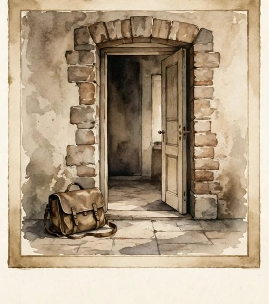
An empty doorway with a satchel on the floor, left in good order.
There came a point, as there must in every honest apprenticeship, where the keeper's way and the teacher's way divided. Not in anger, and not in failure: the work itself demanded it. The teacher had taught a road, faithfully and well, and the road, followed honestly, led the keeper to a fork the teacher's map did not include. This room keeps that fork, and the house is emphatic about its name. Leaving the teacher's way is not betrayal. It is, when it is done in the open and in gratitude, the final examination the teacher's way sets — the proof that the teaching produced a practitioner and not a copy.
The register is careful with the conditions, because the room could be misread as a license for mere restlessness. The departure honored here is the one that comes after mastery of what was taught, not before it; after gratitude, not instead of it; and toward the work's own demands, not away from difficulty. The keeper can recite the difference from experience, having attempted the other kind of leaving in younger years and produced only wandering. The true fork is recognizable by its weight. It costs something to take it. The road behind remains honored, and the traveler keeps looking back at it with love, which is how you know it was a road and not an escape.
The teachers, the real ones, understood this in advance, and the portrait's tenderness comes from that understanding. The best of them said it outright, in one form or another: I am teaching you to leave me. The craft is older than any of its carriers and will outlast each one's version of it, and a teacher who makes departure feel like treason has confused the craft with themselves. So the keeper left, at the fork, with the satchel packed properly — the tools oiled, the standards intact, the thanks said aloud where thanks could still be heard — and this room keeps the doorway, because every later freedom in the house was built at that threshold.
35What a Good Teacher Actually Gives
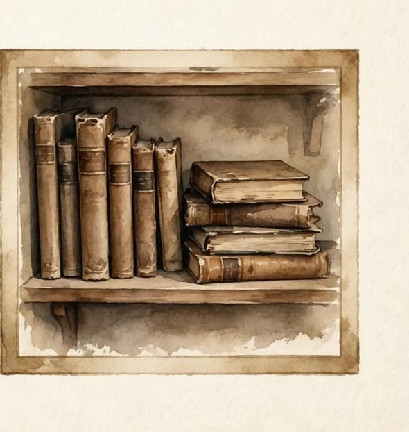
A shelf of well-used reference books, their spines worn by looking things up.
Visitors ask, in this room, the summary question: so what does a good teacher actually give? Not information — the keeper is blunt about this, having acquired information from a hundred sources that left no portrait behind. Not inspiration, though inspiration is pleasant weather. What the good teachers in this hall gave, each in their own manner, was a standard internalized: a way of telling, from inside the work itself, whether it is right. They installed the judge, trained the ear, calibrated the eye, until the keeper could walk out of their sight and go on improving without them. That is the gift. Everything else is wrapping.
The register lists the smaller denominations, because they add up and are often missed in the accounting. A good teacher gives a vocabulary, so the student can think about the work in finer grain than before. A good teacher gives sequence: what first, what next, what to leave alone until the hands are ready. A good teacher gives, above all, evidence — the lived demonstration, in their own practice, that the standard is survivable and the work is worth its costs. Students forgive teachers nearly everything except hypocrisy about the work itself, and the portraits in this hall are, without exception, of people whose practice matched their preaching closely enough to trust.
Notice what is not on the list: rescue. No teacher in this gallery carried the keeper. They equipped, corrected, encouraged and, at the fork, released. The keeper's life was still the keeper's to build, with the keeper's own errors providing a generous share of the later curriculum. That restraint is the final mark of the real article. A good teacher gives the student back to the student, improved. The rooms here are kept, in the end, not for what the teachers did instead of the keeper, but for what they made the keeper able to do alone — which is to say, for what the keeper is doing still, today, in their absence, at the standard they set.
36The Register Thanks Them by Name
The teachers' hall closes at the register, and the register, in this one section, is not general. Where the keeper knows a teacher's name, the name is written. Not initials, not the respectful blur of a role — the name, as it was called across a classroom or a workshop, with the surname the attendance book used. There is a discipline in this that the house applies everywhere and nowhere more strictly than here: shaping that is thanked in general is thanked in vain. Gratitude, to be real coin in this gallery, must be legal tender — specific, addressed, and signed with somebody's actual name.
Once a year, at no fixed date the visitor could set a calendar by, the keeper reads this section aloud. It takes longer than it used to; the list grows by a name or two a year, as lessons land late and unknown teachers are identified by their furniture, decades on. Some of the named are dead. Some are findable and have been found, and told, in plain words, what their year or their sentence accomplished — the register notes these deliveries with a small, satisfied mark. Some names remain addresses unknown, and the reading stands in for the letter that cannot be sent. The house counts the reading as a kept appointment regardless.
The rest of the gallery, you will notice, keeps its people mostly by description: the first hands, the friend, the stranger. This room explains why the teachers are the exception. Teaching is the one shaping that is done on purpose, toward a named student, in a named place; it is professional in the deepest sense, a vow taken in public. To thank it properly is to return the specificity it gave. So the names stand in the register, in ink, in alphabetical disorder, in the keeper's improving hand — a faculty list of everyone who ever aimed their knowledge at this one life and let go of the arrow.
37Friends and Fellow Travelers
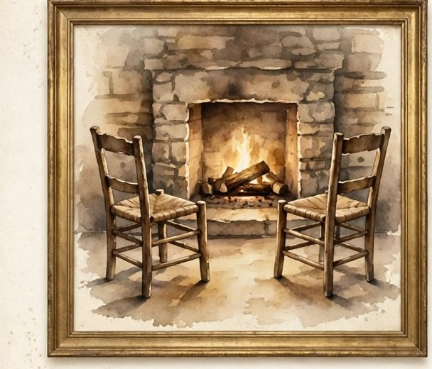
Two chairs facing each other by a fire, drawn close for the evening.
The fourth hall changes the light. The teachers shaped from the front of a room; the people in this hall shaped from beside — walking the same road at the same pace, neither above the keeper nor behind, but alongside, for a stretch of the way. Friends and fellow travelers. The keeper is particular about the second term, because not all of them were friends in the warm sense, and all of them count: the colleague of one hard project, the companion of one long journey, the almost-stranger whose path ran parallel for exactly as long as parallel was needed. The hall is furnished accordingly: pairs of chairs, side-by-side benches, tables set for two.
Fellow traveling is a distinct instrument of shaping, and its mechanism is company. People do not only exchange ideas; they exchange speeds, courages, standards of what a day is for. Walk beside someone for a season and your stride adjusts to theirs without a single conversation about stride. This is why the portraits here are so often of unremarkable scenes — walks, benches, shared tables, the inside of a vehicle on a long road. Nothing was taught. Everything was transmitted. The keeper measures this hall's influence in habits and heartbeats rather than lessons, and the total, by that measure, rivals any hall in the house.
The hall is also honest about its impermanence, because fellow traveling is the most temporary of the gallery's arrangements. Roads fork. Companies dissolve at borders, at graduations, at the ends of contracts and summers, sometimes mid-sentence. The portraits are not less honored for that; they are more accurately honored, the way one honors weather that was perfect for the harvest and gone by winter. What the keeper keeps here is not the continuation of the company but the record of the walking: who was beside the road when the road was steep, and what their pace did to the keeper's own.
38The Friend Who Told the Truth Once
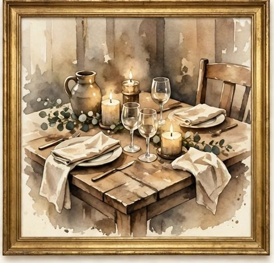
A table set for two, candles lit, everything said plainly.
Among all the portraits in this hall, the keeper stops longest at one of the smallest: the friend who told the truth once. Not the friend who is always telling it — that one becomes furniture of another kind, priced into every conversation and eventually discounted. This one told it once, at the moment it cost something, in the middle of a season when everyone else — the keeper included — was collaborating in a comfortable fiction. The truth was not large. It concerned the keeper, a course of action, and the gap between what the keeper said was happening and what the friend could see. It was said privately, once, without relish, and never repeated or invoiced afterward.
The register records what the sentence did, because it is the cleanest demonstration in the house of how shaping works. Nothing changed that evening. The keeper was, if the record is honest, briefly angry in the way that functions as a receipt. But the sentence had been built to last: it went on working in the corridor for months, quietly re-hanging every picture it passed, until the keeper's account of the whole matter had been rearranged to match the evidence. The course of action changed. The fiction never fully reassembled. One sentence, correctly aimed, had done what a year of hints could not.
The portrait's lesson is about rarity, and the house draws it without sentimentality. Such truth is a currency that inflates with use; the friend who spends it once, exactly, is believed forever, in a way the constant truth-teller never is. The keeper keeps this room as both gratitude and instruction: gratitude, that someone in the hall valued the keeper's life above the keeper's comfort for the length of one sentence; instruction, because the keeper has since had occasion to be this friend, and knows now what it costs, and how to pay it — once, plainly, in private, and then never again mention the price.
39Company That Made You Braver
Courage, in the keeper's experience, is rarely a solo instrument. This room belongs to the company that made the keeper braver: the companions whose presence, at certain thresholds, functioned the way a second pair of hands functions at a heavy door. They did not remove the fear, and the house, being honest, notes that the fear was usually accurate about the stakes. They simply made it possible to act with the fear still in the room — by going first, by going alongside, by treating the frightening thing as ordinary enough to discuss at breakfast. Bravery borrowed at the right threshold has a way of becoming bravery owned, and the interest on the loan, remarkably, is never charged.
The register keeps the specific mechanics, because they are worth imitating. Such company rarely exhorted. It accompanied. It showed up at the hospital corridor, the difficult meeting, the first day of the new and possibly foolish venture, carrying nothing more magical than presence and a refusal to find the situation remarkable. The keeper, steadied by their unremarkableness, discovered that most thresholds are crossed the same way: not by becoming a braver person in advance, but by walking through in good company and noticing, afterward, that the person who arrived is braver than the person who set out.
The portrait is hung where the hall's light is brightest, because this shaping is the one the keeper most deliberately passes on. Others now borrow courage from the keeper's company, and the keeper — knowing exactly what is being borrowed, and from how deep a fund — lends it freely, in the same denominations: presence, ordinariness, staying. The room's final entry records a law the keeper has verified many times since: courage is the most contagious of the virtues, and the least diminished by being shared. A whole gallery could be built of thresholds crossed in company. This room is its entrance hall.
40The Friend of One Season Who Still Counts
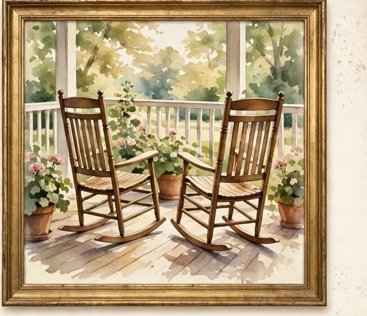
A summer porch with two rocking chairs, one season's light on both.
He was the friend of one season — or she was; this portrait, like several in this hall, is kept deliberately ungendered, because so many keepers own one. A single summer of a youth, one posting abroad, one year of a shared house or a shared hardship: the friendship was total while it lasted and has had no sequel worth the name. By the world's arithmetic such friendships are filed under minor, under people we used to know. The register files this one where it belongs, among the load-bearing. Some seasons do the work of decades, and this one did, and the keeper can point to the exact beams it set.
What a single season can do, that longer arrangements sometimes cannot, is intensity without negotiation. There was no time to build the careful diplomacies that long friendships require. The two of them simply went everywhere together, said everything, attempted whatever the season offered, and were — the keeper still uses this word, precisely — formative to each other in a way that later, longer friendships, with their mercy and their caution, rarely are. The season's brevity was not a flaw in the arrangement. It was the arrangement's engine: everything burned at the rate of people who half-knew they would not be given long.
The friendship ended the way seasons end, without a verdict: a departure, a distance, then the gentle arithmetic of letters unanswered by degrees. The house does not hang this portrait in mourning. It hangs it in accuracy, and in a particular gratitude that only grew clearer with time. Not every shaping is supposed to continue. Some are complete at one season the way a book is complete at its final page, and demanding a sequel would not honor the book. The keeper keeps the room aired, the chairs as they were, the light as it was. Of all the hall's lessons, this may be the one visitors carry out most often: it still counts. It was brief, and it still counts.
41Rivals Who Sharpened the Tools
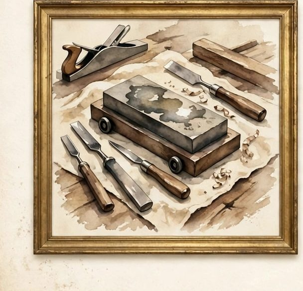
A whetstone on the workbench, the tools laid beside it freshly sharpened.
Not every room in this hall belongs to a friend in the simple sense. Some belong to the rivals: the one whose work was always a season ahead, whose standards stood in the corridor like a measuring rod the keeper could not walk past without straightening. The house does not pretend the rivalry was comfortable. It keeps the room anyway, because comfort was never the admission price; shaping was. The rival's portrait hangs where the keeper passes on the way to work, and the frame is neither gilded nor turned to the wall. It is simply accurate, which in this gallery is the highest available honor.
A whetstone does not love the blade, and the blade does not thank it in the moment. What the keeper learned from the rivalry was mostly this: that being measured against someone better is a form of instruction no friend is kind enough to give. The friend praises the work as it stands. The rival's existence quietly announced that it could stand straighter. So the edges in this house are keen because for years there was someone in the next workshop whose edges were keener, and the keeper rose earlier than pride would have preferred, and worked longer than comfort advised.
The house is careful, all the same, to keep the room in proportion. A rival sharpens tools; a rival does not choose what the tools are for. That choice stayed with the keeper, morning by morning, and the register records it plainly, because a portrait that credited the whetstone with the whole harvest would be flattery of the wrong party. The sharpening was real. The gratitude is real, and it is owed precisely, the way a debt to a craftsman is owed — for the edge, not for the life. The tools hang keen in their row, and the room keeps its even, unsentimental light.
42The Ones You Walked With for a Stretch
Some rooms belong to people whose names the keeper no longer hears anywhere, and who would be surprised, perhaps, to learn they have a room at all. These are the ones walked with for a stretch: the colleague of three projects, the neighbor of one apartment building, the companion of a single long journey taken when both lives happened to run parallel. The road joined, and the road divided, and neither the joining nor the dividing was a failure. It was geography. The house refuses to grade a companionship by its length; the stretch was real while it lasted, and real is enough.
What such company shapes is rarely dramatic, and the register enters it in small handwriting. A way of taking coffee that outlasted the friendship. A phrase that still arrives in the keeper's mouth at the right moments, in a voice that is half borrowed. The habit of walking to think, acquired on those shared roads without a single lesson being announced. People leave furniture behind in one another that casually. The room for a fellow traveler is therefore kept furnished and plain: not a monument, not an apology, just the accurate record of a stretch of road that two people happened to make easier for each other.
The keeper does not go looking for these travelers at every turn of later life, and the house approves of the restraint. Some reunions would be a pleasure; some would be an archaeology neither party asked for. The room does its work without an invitation list. To have walked together is a complete sentence, not an unfinished one, and the portrait stays accurate precisely because nobody has tried to extend the stretch beyond the ground it actually covered. The roads divided at a bend, in decent weather, and both walkers kept the pace they had learned from each other.
43Laughter as a Building Material
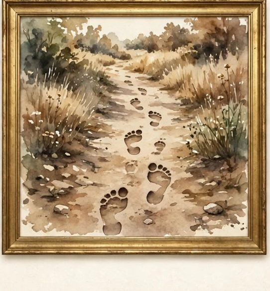
A path in the morning dust, two sets of footprints going the same way.
It would be easy, walking this hall, to count only the solemn shapers: the strict, the wise, the ones who corrected and named. The register corrects that accounting here, in a room kept deliberately bright. Laughter built things in this life that solemnity never got around to. Friendships that began in shared absurdity carried weights that formal kindness never lifted, because a person who has laughed with you at the worst possible moment has signed something no ceremony improves on. The house treats shared laughter as a building material in the plainest sense: it is in the walls.
Consider what the laughing friends actually provided, underneath the noise. They provided the evidence, renewed at every meeting, that the keeper was bearable company to himself. They lowered the price of failure: a disaster recounted to them came back as a story, and a story can be carried in a way a disaster cannot. They taught timing, mercy, the art of the exact sentence that lets a room breathe again. None of this appears on the usual lists of influence, which prefer diplomas and turning points. The register lists it anyway, in ink, because the beams it describes are load-bearing.
So this room is furnished for use, not for reverence: chairs that have been laughed in, a table scarred by years of evenings, a door left open because somebody might arrive in a mood to be rescued from dignity. The portraits here tend to be caught mid-expression, which the more formal halls would call unflattering and this one calls accurate. If the keeper's life has a sound in the walls, part of it is this. A house built only of instruction would be a school. A house built only of comfort would be a bath. This one, at its best, has a kitchen full of noise.
44The Friend Who Left, and What Remained
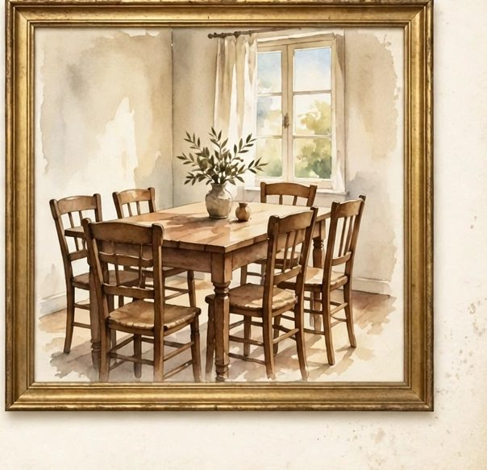
A bright room at morning, its chairs pushed back from the table.
This room is kept for the friend who left: not in anger, necessarily, and not always with an explanation anyone could frame. People leave friendships the way weather leaves a valley, by degrees and then all at once, and the keeper is honest enough now to record that both parties usually contributed the climate. What the register refuses is the rewrite in which the leaving proves the friendship was counterfeit. It was not. Years of real company do not become false because the company ended, any more than a house becomes imaginary when its tenant moves out.
What remained is the room's real inventory, and it is longer than grief first suggested. Habits of thought picked up across a thousand conversations and never returned. A standard for honesty set by someone who once said the unwelcome thing kindly. Books, cities, recipes, whole vocabularies that entered the keeper's life through that door and stayed after the door closed. The register enters all of it without asterisks. Shaping does not require the shaper's continued presence to remain in force, which is either the consolation or the difficulty of this room, depending on the day the keeper visits it.
The house keeps no forwarding address and sends no emissaries. If the friend returns in some later season, the room will be found aired; if not, it stays accurate without them. That is the whole arrangement, and it is harder than it sounds, because the keeper must resist two temptations at once: locking the room in tribute, and stripping it in revenge. Both would falsify the record. So the chairs stay where the last conversation left them, the light stays even, and the portrait hangs neither higher nor lower than the others — a friend who left, in a hall that keeps what leaving cannot take back.
45Borrowed Courage
There were seasons when the keeper's own supply of courage ran visibly low, and the register, which hides nothing in this hall, records what happened next: somebody else's was borrowed. Not stolen, not simulated — borrowed, the way a neighbor's ladder is borrowed, in plain sight and with the intention of return. A friend stood in a doorway and said the situation was survivable, and the saying, from that particular mouth, carried a weight the keeper's own voice could not produce that year. The room kept for borrowed courage is therefore a working room, full of other people's steadiness.
Borrowing of this kind has its own etiquette, and the house observed it without ever writing it down. You do not borrow courage to avoid a decision; you borrow it to reach one. You do not keep it past the emergency and call the loan a character. And you return it increased, when the season turns, usually by standing in somebody else's doorway saying the same plain sentence. The register notes how often the returned courage was the original loan, almost word for word — the sentence passing hand to hand down the corridor like a lamp nobody owns.
Nothing in this room suggests the keeper would have collapsed without the loan; the house declines melodrama in every hall. It suggests only that the timing mattered, as timing does in building: a wall raised one week before the storm stands, and the same wall a week later is a repair. The friend who lent the courage rarely remembers the loan. The keeper does, and keeps the room for it — not as an admission of weakness, but as the honest carpentry of a life in which almost nothing load-bearing was ever carried by one pair of hands alone.
The Portrait Desk
One desk receives all correspondence for this house — questions, corrections, and word of any portrait room: a hand remembered, a lesson landed late, a stranger never thanked, and how the gallery looks from the far end. It is read in the order it arrives.
46Fellow Travelers, Not Cargo
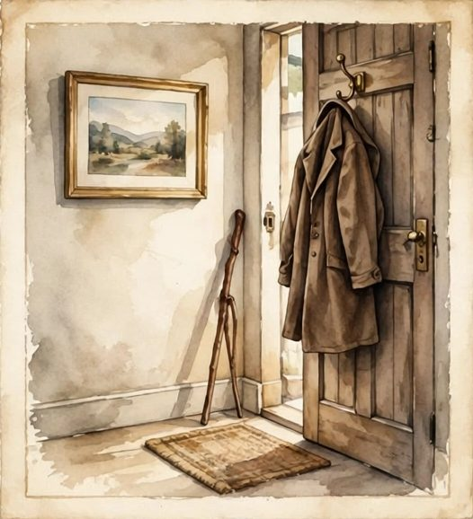
A coat lent for the evening, hanging by the gallery door.
The house is particular about one distinction, and this room exists to state it: the people who walked with the keeper were fellow travelers, not cargo. Cargo is carried. Cargo is loaded, secured, delivered, and charged by weight; it has no say in the route and no share in the weather. Nobody in this hall was any of that. Each of them was walking somewhere of their own, on errands the keeper only partly understood, and the stretch of shared road was a meeting of two journeys, not the absorption of one journey into another. The register insists on the point because so much false accounting begins exactly there.
The doctrine matters most on the days when the accounting goes wrong. It is tempting, in a difficult season, to weigh the people who walked with you: to call one a burden and another a blessing, as if the road issued receipts. The house forbids the scales. A fellow traveler who slowed the pace may have been carrying weather the keeper never saw. A companion who seemed to cost nothing may simply have been billed to a different season. What each of them actually was, the register records in the only honest currency: company, given and received, on a road neither of them owned.
And the rule runs in both directions, as every rule in this house must. The keeper, too, was a fellow traveler on other people's roads, and was not cargo on any of them — not a weight someone else carried toward a finished life, but company they chose for the stretch it lasted. To remember that is to keep this room's lighting even in both directions at once. Nobody here was luggage. Nobody here was a porter, either. They walked. That is the whole dignity of the hall, and the house writes it over the door in plain letters.
47Some Friendships Shape by Ending
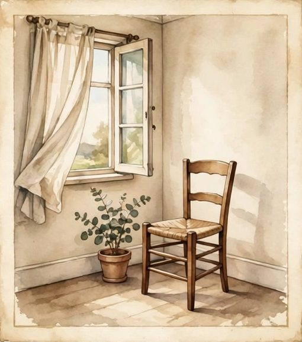
A chair kept aired and ready in an otherwise empty room.
It took the keeper years to admit this room into the gallery, because it contradicts the greeting-card arithmetic in which a friendship's value is proven by its survival. The register states the plainer fact: some friendships shape a life precisely by ending. Not every ending is a wound, and not every wound is the point. The point is that a closed door also gives a corridor its shape. While the friendship ran, it did its work; when it stopped, the stopping did work too — and the second labor is the one this room is kept to honor.
What does an ending teach that a continuation could not? It teaches the keeper the exact size of his own reliance, which is invisible while the supply holds. It teaches which parts of the shared life were truly his and which were rented from the friendship's momentum. It returns hours, loyalties, and habits to his sole management, some of them like rooms he had forgotten he owned. None of this requires the friendship to have been a mistake. A book is not a mistake because it ends. The ending is simply the part of the shaping that only the ending could perform.
So the portraits of ended friendships hang at the same height as the portraits of lasting ones, and the keeper has stopped explaining the arrangement to visitors. If anything, these rooms get a particular tenderness in the register's hand: no forwarding, no mythology, the dates given plainly, the good years and the last one entered in the same ink. A friendship that shaped by ending is not a failed friendship, whatever the arithmetic says. It is a completed one. The house keeps its chair aired like the others, against a day when the keeper passes and simply wants to sit there a while.
48The Register Keeps Their Rooms Aired
The hall of friends and fellow travelers closes with a piece of housekeeping, because housekeeping is what the register believes in more than ceremonies. These rooms are aired. Not embalmed, not redecorated for visitors, not left to the damp of being remembered only on anniversaries — aired, regularly, the way a house stays honest: windows open, light admitted, the furniture of each friendship looked at plainly and left where it belongs. The keeper does this round without music. It is the unglamorous maintenance by which gratitude, in this house, proves it is a practice and not a mood.
Airing a room changes nothing in it, and that is precisely its function. The rival stays sharp, the traveler stays departed, the laughed-in chairs stay scarred. What the fresh air prevents is the slow falsification by which a kept room becomes a shrine or a grievance, depending on the weather of the keeper's later years. Memory left unventilated exaggerates: the good friend grows gilt, the ended one grows horns. The register's whole effort in this hall runs the other way, toward accuracy — toward remembering each of them at their actual size, in their actual light.
So the round is made in all seasons, and the hall ends the way it began: with the keeper's hands on the window latches, doing the small work that keeps a large debt of gratitude from spoiling into either worship or bookkeeping. The friends, could they inspect the arrangement, would mostly approve of being neither. They were people, not holdings. The rooms say so by staying ordinary and open, and the corridor beyond them leads on, as corridors do, to a stranger hall altogether — where the weather is brief, the visits shorter, and the shaping, improbably, no smaller for it.
49Strangers and Brief Weather
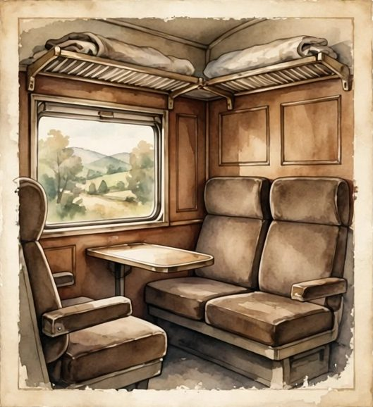
A train compartment in morning light, two seats facing each other.
The next hall of the gallery is the one visitors walk through fastest and remember longest, which the keeper considers a fair summary of its subject. These rooms belong to strangers and brief weather: people who passed through the keeper's life the way a front passes through a valley, altering the light for an hour and gone by evening. No shared history props up these portraits. Many of their subjects could not pick the keeper out of a line. And yet the register hangs them in a hall of their own, because the shaping done here was done without obligation — the purest kind there is.
Why should an hour outweigh a decade, in some of these rooms? The house offers no law, only an observation about timing. Weather arrives when the ground is ready for it: the same rain that runs off a hard season soaks into a plowed one. The strangers in this hall had the luck or the misfortune to arrive at plowed moments — at the station, in the corridor, on the one evening the keeper was actually listening. Their words did not need to be wise. They needed to be said then, by someone with no stake in the answer, and they were.
The rooms here are smaller than the others and furnished accordingly: a single chair, a window, a coat hook with nothing on it. Brevity sets the dimensions. But the keeper has learned not to confuse the size of a room with the depth of its mark on the floor plan, and this hall is the proof he cites. Some of the people in the large halls changed the keeper's habits. Some of the people in these small ones changed the direction the habits were facing. The gallery makes room for both kinds of weather, and labels neither as the greater.
50The Stranger on the Train
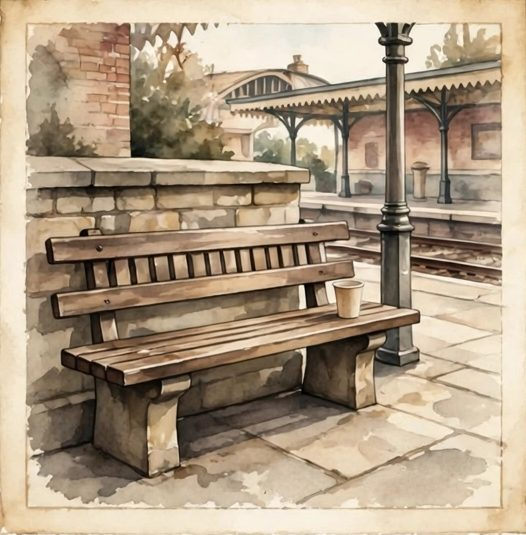
A station bench in flat light, one paper cup left behind on it.
The first room of the hall belongs to the stranger on the train, and the keeper can no longer say which train, which year, or which direction the windows were facing. The face is gone entirely; the register does not invent one. What remains is the shape of an afternoon: two facing seats, a long delay somewhere in flat country, and a conversation that began the way such conversations do, with the weather, and ended somewhere neither passenger had planned to go. The train eventually arrived. The conversation, by the register's accounting, is still in transit, and still delivering.
What did the stranger actually do? By the evidence: very little, and precisely enough. He listened without auditioning for the role of adviser. He asked two questions that were better than the keeper's own framing of the matter, and then, crucially, he got off at his station. No address was exchanged. No mentorship was founded. The gift had a terminus, and the terminus was part of the gift, because advice from a man you will never see again arrives without a hook in it. You can take it or leave it on the seat. The keeper took it.
For years the keeper tried, idly, to reconstruct the man from the conversation — a trade, a city, a reason for the journey — and the register let the attempts stand in the margin, crossed out in pencil. The reconstruction is not the room. The room is the afternoon and the two questions, kept exactly as received, because the house suspects that the anonymity was a load-bearing part of the structure. Had they exchanged names, the questions would have acquired biographies, and biographies argue. Anonymous, they simply stayed true. The portrait frame in this room is therefore empty, deliberately, and it is one of the most visited in the hall.
51One Conversation, Kept for Decades
Some conversations are used up in the saying of them, and some are canned goods: opened once, in an unlikely kitchen, and found decades later at the back of the shelf, still nourishing. This room is kept for one of the second kind. The keeper cannot reproduce it. The register does not try; it records only the shelf mark and the date, and the plain fact that a single exchange — an hour, perhaps less, with someone whose name became a rumor within a year — has been drawn on ever since, like water from a well nobody remembers digging.
Why this one? The house has examined the question the way it examines everything, by walking around it. The conversation was not the wisest the keeper ever had, nor the warmest, nor the one with the most famous other party. It may simply have been the first time someone described the keeper's situation from outside it — accurately, briefly, without flinching and without relish. A mirror held up once, at the right angle, can do what a portrait studio cannot. The keeper went home and rearranged a room of his life based on what the mirror showed, and has been rearranging, at longer intervals, ever since.
The register keeps a special tenderness for such conversations because they cannot be repeated on demand. You cannot schedule the stranger, commission the mirror, subscribe to the afternoon. They arrive in the unadministered parts of a life — the delayed train, the shared bench, the wrong waiting room — which is one reason the house distrusts any schedule too tight to admit them. The keeper, for his part, has learned to keep a chair free in the front of his attention. Most days the chair holds nothing but weather. On the days that matter, across the decades, it has held exactly this.
52The Author You Never Met
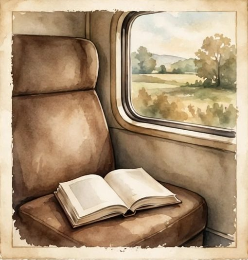
A book left open on a train seat, one page catching the light.
Among the strangest portraits in this hall are the ones of people the keeper never met at all: the authors. A book arrived — borrowed, recommended, bought for its cover in a station shop — and its writer, dead or distant or simply elsewhere, rearranged the furniture of a mind they would never see. The register hangs these portraits without embarrassment, because the house counts influence by its effects and not by its paperwork. The author required nothing: no meeting, no allegiance, no fee beyond the price of a paperbound. Few of the keeper's benefactors have been so undemanding, or so thorough.
It is worth stating precisely what an unknown author can and cannot do. They cannot know the keeper, and so cannot flatter him, aim at him, or forgive him; their sentences were built for a general reader who turned out, one winter, to be this one. That indifference is the mechanism. Advice from the known arrives wrapped in the relationship; the book arrives naked, and can be argued with at midnight without social cost. The keeper argued, extensively. Some of the arguments lasted years, and the register counts the arguing itself among the author's gifts to the house.
The house keeps one shelf for such authors and no pedestal. A pedestal would falsify the record, because the keeper also knows the same book passed through a thousand other hands and rearranged nothing there; the shaping happened in the meeting, not in the object, and meetings are co-authored by the reader's readiness. Even so, the room stands. The portrait here is mostly of a reading chair and a lamp, which the keeper considers the honest likeness: this was the site of the influence, this was its furniture, and the weather outside the window, that winter, did the rest.
53Advice from Someone Who Never Knew Your Name
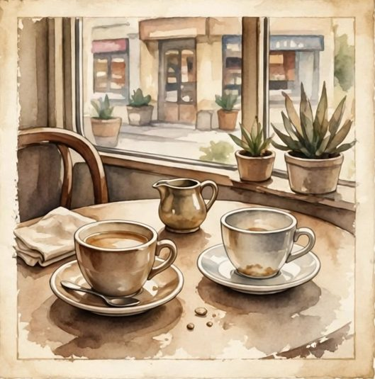
A café table with two cups on it, one of them finished.
The keeper was once given the most useful advice of a whole decade by a person who did not know his name, his trade, or a single fact of his circumstances, and this room exists because the register could not file the event under any other heading. It happened standing up, in a queue or a corridor, the way the era's real consultations did. The advice was one sentence long. It was not profound by any literary standard. It was, however, exactly fitted to the lock it turned in, and the house has wondered about the fitting ever since.
How does a stranger aim so well without a target? The house's theory, entered here without insistence, is that he does not aim at all. He says the thing his own life taught him, plainly, the way a man mentions rain, and it lands where the listener's life happens to rhyme with his. The advice was probably given to a dozen people that year. In eleven of them it found no lock. In the keeper it found the exact one, and this asymmetry — the speaker's ordinariness against the hearer's readiness — is the whole mechanics of the brief encounter, and most of its mercy.
There is no portrait to hang here, and the register considers that a feature of the room rather than a lack. A face would localize the advice, give it a biography, make it one man's opinion. Nameless, it stays a tool on the shelf, usable by whoever walks the gallery after the keeper. Perhaps that is what the brief shapers are for, in the architecture of a life: not to be known, but to be quoted — carried forward, unattributed, worn smooth by use, until the sentence is less a quotation than a handle the keeper's own hand knows by shape.
54The Example of a Life Glimpsed Once
Once, through a lit window or across a platform or down the length of some ordinary street, the keeper saw a life being lived at a pitch he had not known was available. He did not meet it. Nothing was exchanged but the glimpse, and the glimpse was enough: an old man working at a bench with unhurried mastery, a household whose laughter reached the pavement, a stranger carrying grief the way a good coat is carried — visibly, and without being bent by it. The register keeps a room for the glimpse, because evidence of possibility is a form of instruction no syllabus covers.
The house is careful with this room, because a glimpse is easily falsified by longing. The life seen for eleven seconds was edited by the seeing: no debts visible, no Tuesdays. The keeper knows the bench worker had bad mornings; the register says so in the margin. And still the room stands, because the glimpse was never entered as a report on that stranger's whole life. It was entered as a measurement of the keeper's own ceiling, which turned out to be higher than the estimate he had been living under. That is a legitimate use of a stranger: not as a portrait, but as a plumb line.
Years later the keeper passed the same street and looked for the window, out of an entirely human wish to verify the evidence. It was dark, or demolished, or simply misremembered; the register declines to choose. The room in the gallery does not depend on the verification. Glimpsed lives leave no forwarding address either, and perhaps that is their protection: they cannot be followed up, interrogated, or disappointed in person. They remain what they were at first sight — a brief, unarguable demonstration that a life can be carried that way. The house keeps the demonstration, and lets the demonstrator go in peace.
55Kindness from Someone Passing Through
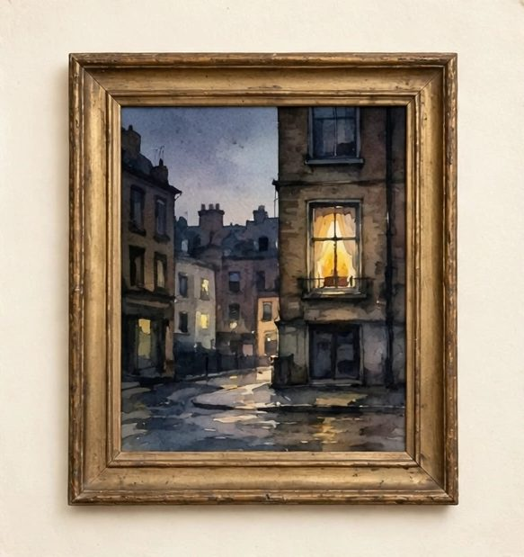
A lit window across the street at dusk, its warmth reaching the pavement.
This room is kept for a kindness so brief that the keeper still feels faintly embarrassed by the size of its consequences: a seat given up with a whole day's grace in the gesture, a stranger's umbrella held the extra three seconds that saved the papers, directions walked — actually walked — to the corner and pointed out by someone who then vanished into his own errands. Nothing was owed. That is the room's whole point. Kindness from the known is braided into the relationship's long account; kindness from someone passing through arrives unencumbered, and it lands differently because of that.
What did the kindness actually change? Less than the shaping done by teachers, and in a way more. It changed the keeper's working estimate of the world's default setting. A man who has been rescued twice by passersby walks differently through the third crowd: expecting, on the evidence, that help is a normal feature of the landscape and offering it on the same assumption. The register is aware this sounds like sentiment. It records it anyway, in the driest hand it owns, because the behavioral evidence is in the house's own ledger: the keeper's hand rises to hold doors it was never taught to hold.
The house notes, with some satisfaction, that kindness of this kind cannot be commissioned, refunded, or repaid to its source. The source is gone, by design of the whole arrangement. The only available forwarding address is the next stranger, and the register keeps the room largely to record the forwarding: door held, seat yielded, umbrella extended three seconds past convenience, in a chain the keeper can neither start nor finish but is honored to be a link in. Some rooms in this gallery commemorate what was received. This one commemorates what was passed on, which the house considers the same event, continued.
56The Stranger Who Said the Necessary Thing
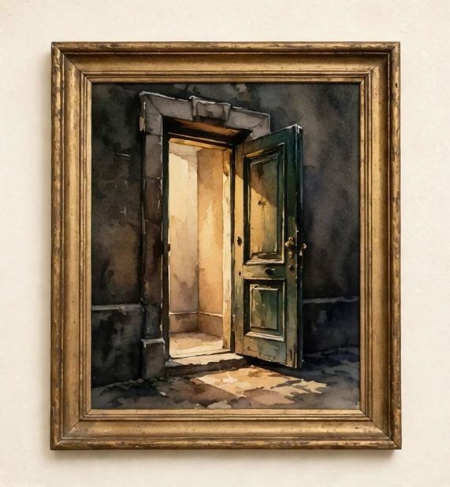
A door held open, lamplight spilling out into the street.
There is a difference, in this hall, between the pleasant thing and the necessary thing, and this room is kept for the stranger who said the second. The keeper was, that season, surrounded by people too fond of him or too polite to file a report; the report, when it came, came from outside the circle entirely — a fellow passenger, a voice at a neighboring table, someone with nothing to protect. It was not said cruelly. That is the part the register underlines. It was said the way a stranger says your collar is torn: informationally, as a service, free of charge.
The house does not repeat the sentence here. It was for one season and one listener, and quoted out of its weather it would sound like anyone's rudeness. What the room keeps instead is the mechanics of the rescue. The truth arrived without the usual freight of motive, so the keeper could not do the usual thing and argue with the motive instead. He had to argue with the sentence, and the sentence held. Within a year a decision had been taken that fondness had been postponing for five. The register dates several other rooms in this gallery from that decision, which makes this small one load-bearing.
It used to puzzle the keeper that the necessary thing so rarely comes from the inner rooms of a life, where the love is. This room is where he stopped being puzzled. Love edits itself; it has too much history to be brief. The stranger's sentence was possible because the stranger owed nothing to the keeper's past and expected nothing from his future — a clean instrument, used once. The house keeps the room swept and its chair ready, in case some future season needs the same service. The register notes that the keeper has since tried, twice, to be the voice at the neighboring table.
57They Never Learned What They Did
If the keeper could send one report out of this hall, it would go to the people who do not know they are in it. The stranger on the train died, perhaps, never suspecting he had co-signed a life. The voice at the neighboring table forgot the sentence by the following week. The author filed the book under finished business a lifetime ago. Almost none of the brief shapers learned what they did, and the house has thought carefully about whether this is a defect in the arrangement or its very design. It has concluded, after long deliberation, that it is the design.
Consider what knowledge would have done to the gifts. A stranger informed of his usefulness becomes, retroactively, a benefactor — and benefactors have accounts, expectations, a way of re-entering the story at inconvenient anniversaries. The sentence at the neighboring table, delivered in ignorance, stayed clean precisely because its speaker never cashed it in. The house does not begrudge them the news; it simply observes that the news is undeliverable, and that the undeliverability protects the gift from the one thing that spoils most gratitude, which is negotiation. What they never learned cannot be invoiced, inflated, or withdrawn.
So the keeper thanks them the only way the architecture allows: by keeping the rooms. Somewhere in the register there is a page of undeliverable letters, written out in full and never sent, which visitors sometimes mistake for melancholy. It is not. It is bookkeeping — the house entering, against each small room, the sum that cannot be forwarded, so that the gratitude exists somewhere in writing even if its addressees live and die unnotified. The frames stay dusted. The chairs stay ready. The shapers stay unknowing, and the house has made its peace with being the only party who knows the whole story.
58Brief Is Not the Same as Small
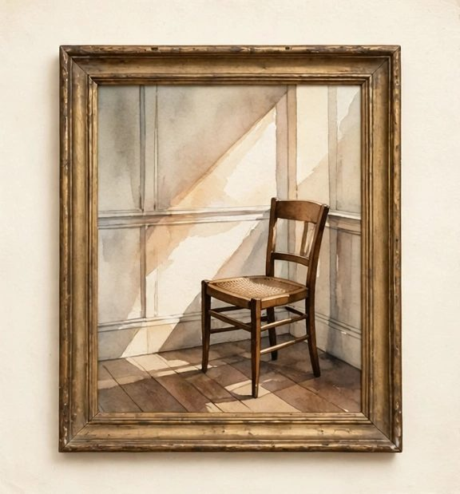
A waiting-room chair standing alone in a single shaft of light.
Over the door of this room the house has written its whole argument with the calendar, in plain letters: brief is not the same as small. The calendar is a crude instrument. It measures the length of an encounter the way a ruler measures a song, accurately and entirely beside the point. A decade of weather can pass through a valley and leave it unchanged, and one front, arriving on the single morning the ground was ready, can rearrange the drainage of a life for good. This hall keeps both kinds of weather, and refuses, on principle, to sort its rooms by duration.
The keeper arrived at the doctrine the slow way, by catching himself apologizing for these rooms. Their portraits are sketches; their furniture is a chair and a window; a visitor could reasonably ask whether an hour's acquaintance earns wall space among the lifelong. The register's answer is the floor plan itself. Trace the walls that were actually moved in this life and some of them run back, unmistakably, to the smallest rooms in the gallery. Size of room, in this house, is set by the length of the visit. Depth of foundation is another matter, measured in what still stands on it.
There is a corollary the house insists on, because doctrines in this gallery are load-tested in both directions. If brief is not small, then long is not automatically large. Some lifelong presences pass through the register as weather that never once rained: decades of proximity, no shaping to record, and the house records the absence without embarrassment or blame. Duration is hospitality's unit, not influence's. The keeper keeps both truths on the same page, and the page is the calmer for it: honor the hour that moved a wall, forgive the decade that didn't, and never confuse the two currencies again.
59You Have Been This Stranger for Someone
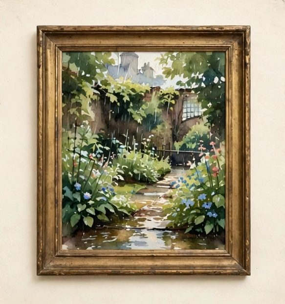
A garden just after brief rain, every leaf washed bright.
The hall's last doctrine is the one that reverses the camera, and the keeper resisted it longest. Somewhere, in all probability, there is a small room in a stranger's gallery with the keeper's own sketch on the wall. A sentence he said on a train and forgot by supper. A kindness performed at the speed of weather and weather's memory. Directions walked to a corner, once, for someone whose crisis he never learned. The register cannot verify a single one of these rooms. It asserts them anyway, on the same evidence the whole hall stands on: that this is simply how lives are built.
The thought disciplines the keeper in two directions at once, and the house counts it among the hall's most useful furniture. Forward, it makes him careful with throwaway sentences: any one of them might be load-bearing in a stranger's architecture, and he will never be told which. Backward, it steadies him against the vanity of significance. The great shapers of his own life mostly did not know they were shaping. It follows, with a symmetry the register finds consoling, that his own best work as a shaper was probably also done unknowing — in weather, at speed, and free of charge.
So this room is kept empty of portraits and full of implication, the only room in the gallery the keeper maintains in someone else's house by proxy. He cannot air it, light it, or check its chair. He can only live as though it exists — speak to strangers as a man who may be remembered by them, hold the umbrella the extra seconds, say the necessary thing informationally and free of charge. The gallery he will never see is being furnished, or not, by exactly these unrecorded minutes. The register closes the hall's account there, and considers the arrangement just.
60The Weather Leaves; the Shaping Stays
The hall of strangers closes the way its weather did: without ceremony. By now the front has passed, the visitors have gone back to their trains and queues and neighboring tables, and the keeper walks the small rooms alone with the register under one arm. Everything that made these encounters brief has finished happening. Everything that made them matter has not. A sentence is still propping a door in the third corridor. A kindness is still being forwarded, hand to hand, address unknown. A two-question conversation is still arriving, decades later, at stations the keeper has not yet reached.
That is the hall's whole thesis, and the register states it once, plainly, at the door: the weather leaves; the shaping stays. Weather is not diminished by leaving — leaving is what weather is for. And the shaping is not diminished by the weather's anonymity, brevity, or complete unawareness of its own effects. If anything, this hall has made the keeper suspicious of permanence as a credential. The lifelong rooms elsewhere in the gallery earn their place by what they built, and so do these. Measured by the building, the brief ones are not the gallery's poor relations. They are its proof of concept.
So the keeper latches the small windows, straightens the single chairs, and leaves the hall's lamps burning at their low, even setting — not in expectation of return, since return is the one thing this hall never promises, but in recognition of work done. The corridor beyond is dimmer and less comfortable; the house does not disguise it. The difficult rooms are next, and their lighting is kept just as even, on the same principle that served here: nothing in a life is honored by being exaggerated, and nothing — not even weather, not even harm — is understood by being looked at in the dark.
The Portrait Desk
One desk receives all correspondence for this house — questions, corrections, and word of any portrait room: a hand remembered, a lesson landed late, a stranger never thanked, and how the gallery looks from the far end. It is read in the order it arrives.
61The Difficult Rooms
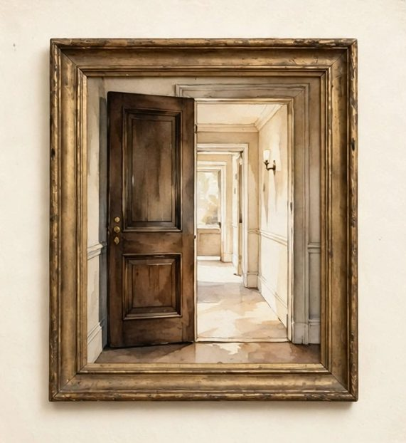
A door closed firmly, and beyond it the corridor going on bright with lamps.
Every gallery honest enough to keep the kind rooms must keep these too. The difficult rooms stand in the same corridor, under the same numbering, and the keeper does not pretend they belong to another house. Here are the people who shaped a life the way weather shapes a coastline: not always by tending it, sometimes by striking it, sometimes simply by being the obstacle the road had to learn to go around. The rooms are not hidden, and they are not exhibited either. They are kept, the way a ledger keeps every entry, because an account that edits out its hard pages has stopped being an account at all.
What is kept here is the shaping, recorded plainly, the way a surveyor records a cliff: this stood in the way, this changed the route, this is where the path now runs. The keeper does not decorate these rooms, and does not darken them either. A chair, a lamp, the portrait at its proper height — the same furnishings as anywhere else in the house. The discipline is deliberate. If the difficult rooms were kept worse than the others, the gallery would be keeping a grudge instead of a record, and a grudge is only another way of letting the hard chapters furnish the whole house.
Some visitors hurry past these doors, and some stop in front of them longer than anywhere else in the gallery. Both are understandable, and neither is required. The keeper asks only that the rooms not be denied: a life is not made more truthful by cropping its cast, and the person who emerged from all of it — the kind rooms and these alike — is the only person there is. What follows in this hall is an account of how resistance, refusal, and departure did their shaping, kept at the same temperature as everything else in the house, neither warmed nor chilled by the telling.
62Shaped by Opposition
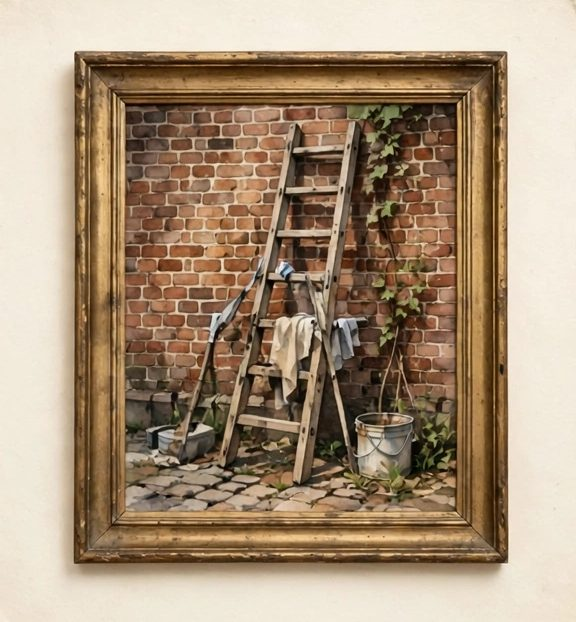
A brick wall across the path, and a ladder leaned against it, waiting.
Some people shape a life the way a wall shapes a garden: by deciding where it cannot go. The opposition was rarely announced as a gift, and at the time it did not feel like one. It felt like friction, like delay, like a door that would not move however honestly it was pushed. And yet the friction did work that ease could not have done. A route denied became a route invented. Strength that comfort never requested was built, plank by plank, in the years spent finding another way through, and the detour became, in the end, the road most truly owned.
The keeper is careful here, because opposition is easy to romanticize from a safe distance, and the record does not claim the wall was kind. The wall was a wall. What is recorded is only what the climbing did: the hands grew surer, the eye learned to read stone, the patience acquired in those years turned out to be load-bearing in every later room. To say the opposition shaped the climber is not to thank the wall for existing, and it is not to recommend walls to other people's gardens. It is a surveyor's note, no warmer and no colder than that.
There is also the opposition that came from inside the same house — the no that sounded like prudence, the fear dressed as advice, the voice that argued for the smaller life in a reasonable tone. Those rooms are kept too, though their portraits are harder to hang, being half mirror. Against them the shaping worked differently: not a wall climbed but a weight argued with, daily, until the argument itself became a kind of muscle. The keeper notes, without triumph, that a life is measured partly by what it refused to obey, and that refusal, learned early, kept being useful for decades.
63The One Who Said You Couldn't
Every gallery of this kind keeps one portrait of a sentence. The sentence was short, and it was delivered with the confidence of someone describing weather: you couldn't. Sometimes it came from authority, sometimes from love miscarrying into caution, sometimes from a rival who said it precisely because it might take root. It did take root, in a way — not as belief, but as a splinter the mind kept working around, and the working-around shaped the next thirty years more thoroughly than agreement ever managed to shape anything in this house. The keeper hangs the portrait here without a caption of any kind.
It would be tidy to say the sentence was simply wrong, and the life that followed its refutation. The record is less tidy. The sentence was wrong about the destination and, in one narrow way, right about the cost: the thing could not be done cheaply, or soon, or by the road originally drawn. What it could not foresee was the person's willingness to pay. So the portrait is kept neither as a trophy of defiance nor as a wound on display. It is kept as one keeps the weather report from a famous storm: evidence of the conditions under which the voyage was actually made.
The keeper is sometimes asked whether the sayer of the sentence deserves the room — whether being wrong so consequentially earns a place in the gallery. The answer follows the house rule: the room records influence, not merit. Plenty of portraits here were earned by kindness; this one was earned by impact, and the gallery does not confuse the two currencies. Nor does the keeper write to the sayer, in triumph or in grievance. The sentence did its work and was outlived. The room is quiet now, and the quiet is not forgiveness and not resentment. It is simply what finished business sounds like.
64A Warning Is Also a Shape
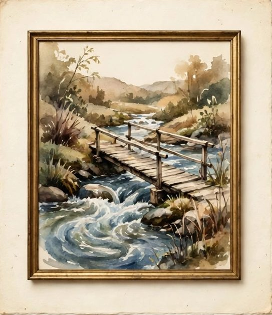
A narrow bridge over fast water, its rope rail worn by careful hands.
Some people enter a life as examples of what not to become, and the gallery keeps their rooms without flinching from the arrangement. The warning was not always intended. Often the person was simply living, visibly, at close range, and the watching child or the watching friend drew the conclusion alone: that road ends there; those habits compound into that weather; I will steer by this, away. It is a strange kind of teaching, done without a teacher's knowledge or consent, and the house records it with care, because the lesson was real even where the intention was absent. The register files it, plainly, under instruction received.
A warning shapes by refusal, which is slower work than shaping by example. The example says follow; the warning says only do not, and leaves the whole map to be drawn by the one who heard it. This is why the rooms of warnings often matter more with time: the young keeper knows what to avoid and nothing else, but the older keeper discovers that the long labor of building an opposite — patience where there was temper, steadiness where there was drift — quietly became the architecture of an entire life. The negative, developed over decades, turns out to be a picture after all.
The keeper holds one scruple about these rooms: the warning was a person, not a parable. It is easy, decades later, to reduce a complicated life to the single caution it offered, and the gallery refuses the reduction even while keeping the lesson. The portrait shows the whole sitter, insofar as the keeper ever saw them whole — the humor, the better years, the parts that had nothing to do with the warning at all. To take the lesson and discard the person would be its own kind of carelessness. The house takes the lesson, and keeps the person in the frame, both.
65The Door Closed in Your Face, and the Corridor After
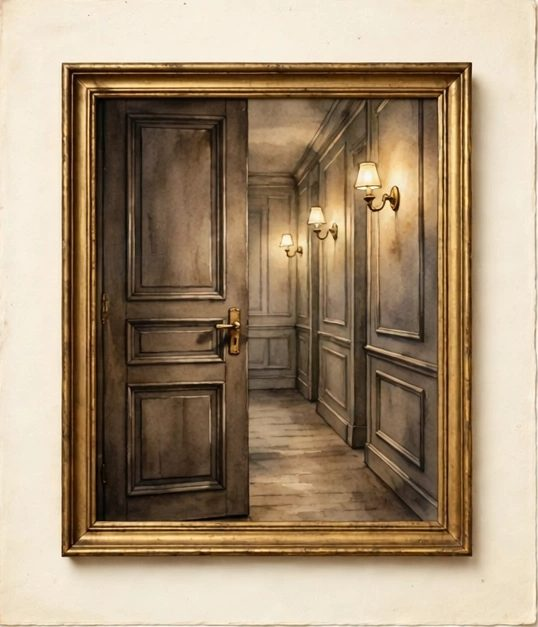
A corridor beyond a closed door, its lamps still lit the whole way down.
There is a particular moment this room exists to record: the door closing, audibly, with oneself on the wrong side of it. The rejection was not abstract. It had a sound, a season, a face or an institution behind it, and it arrived — as such doors usually do — precisely where the hope had been largest. The keeper does not rehearse the closing anymore. What the room is kept for is the second half of its title, the part the slam tried to drown out: the corridor after. It turned out to be a long one.
The corridor after is where the actual shaping happened. In it, a person learned what they were made of when the preferred future withdrew its offer: the smaller rooms taken without shame, the work accepted that pride would once have refused, the unexpected kindnesses found in low places. The closed door gets one wall of this room. The corridor gets the rest — the years of walking it, the doors along it that opened partway, then fully, then onto rooms better suited than the one originally begged for. Judged by length alone, the corridor is the larger biography.
This is not a doctrine of gratitude toward closed doors, and the keeper would strike that reading from the register if it appeared. Some doors should have opened. Some closings were small, or frightened, or wrong, and the record can say so without heat. What the room insists on is proportion: a life is not the sum of its refusals, and the person who kept walking is not a footnote to the person who shut the door. In this gallery the corridor is lit as brightly as the threshold ever was, which is the keeper's whole argument, made in lamps rather than in words.
66Shaped by Someone's Leaving
Departures shape a house as surely as arrivals do, and this room is kept for the leavings that bent the grain: the one who moved away, the one who withdrew into silence by degrees, the one whose chair was simply, one ordinary year, no longer at the table. The shaping is rarely discussed, because leaving looks like an ending rather than an influence. It is an influence. A departure redistributes weight through the whole structure; everyone remaining stands a little differently afterward, in ways that become permanent before they are ever noticed. The register notes the redistribution without assigning it a motive.
The keeper makes no claim here about why they left. The register is not privy to other people's reasons, and some leavings that looked like abandonment were, from the other side, survival; some that looked like betrayal were only exhaustion arriving at its honest conclusion. The room records the shape, not the trial. What is certain is narrower and sufficient: after the leaving, certain strengths were built that comfort had never required, certain tendernesses were learned the hard way, and a particular self-reliance — neither chosen nor resented, exactly — became part of the load-bearing structure of the life.
It matters to the house that this room is not kept bitter, and not kept sentimental either. The leaver is not frozen mid-exit, hand on the door, forever cast as the one who went. They went; the life continued; both facts are allowed their full size. Occasionally the keeper hears of them still — a name in a letter, a face in a crowd that turns out to be a stranger's — and the room stirs, briefly, the way a curtain stirs in a shut house. Then it settles. The portrait stays. The door of the room is not locked, and it is not standing open in invitation. It is simply a door.
67Naming the Harm Plainly, Once
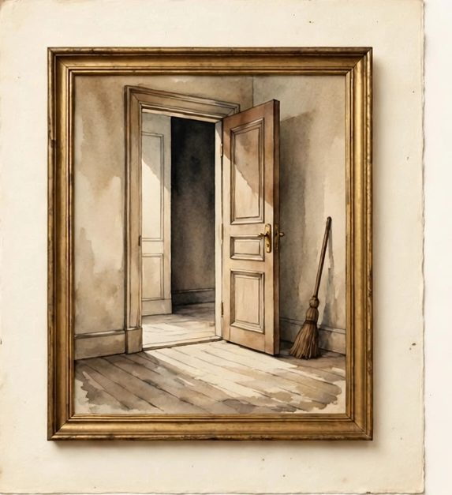
An open door above a swept floor, the room aired and plainly lit.
This room exists because some shaping was done by harm, and the gallery's even lighting is not a euphemism. The house rule is stated in the title and enforced without exception: the harm is named plainly, and it is named once. Plainly means without decoration and without softening — what was done is said as it was, in words that fit it, in the register's ordinary hand. A record that cannot say the true word for a thing cannot be trusted with any of its other rooms, and this gallery intends to be trusted. That is the whole of the policy.
Once means the naming is not a liturgy. The keeper does not return to this room daily to recite the injury, does not build the house's conversation around it, does not require visitors to stop here and perform the appropriate sorrow. The harm was an event in the life; it is not the life's employment. Naming it once, accurately, is how the register keeps it from being named forever, inaccurately, by rumor and mood. What is written down in plain words stops swelling in the dark. What is left unwritten tends to be retold at increasing size, in worse light, for years.
And the naming is bounded in the other direction too: it names the harm, not the whole person who did it. The register's sentence covers the act and its season; it does not pretend to be a biography of the doer, who had other years, other rooms, a life not exhausted by its worst entry in this ledger. This restraint is not mercy performed for an audience. It is accuracy. The keeper has been misdescribed often enough, in other people's registers, to know the weight of a record that confuses one chapter with the entire book, and declines to keep such a record here.
68A Room Is Not a Verdict on a Life
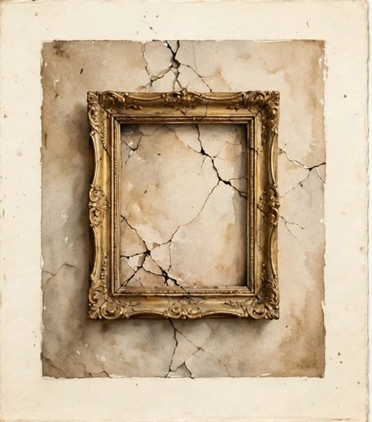
A cracked frame kept as it is on the wall, its portrait level and lit.
A portrait in this gallery covers the years the keeper actually shared with the sitter, and no more. It is a view from one chair, in one stretch of corridor, taken in the light available at the time. The house states this plainly because the difficult rooms tempt a larger claim: that to have been harmed by someone is to hold the definitive account of them. It is not. It is a true account of an intersection. The rest of that life — its other intersections, its private weather, its own difficult rooms in other people's galleries — runs on without the keeper's knowledge, and the register leaves the blank pages blank.
This is not a small distinction, and the house keeps it for the keeper's sake as much as the sitter's. A verdict requires a whole life laid out in evidence, and nobody's is — not theirs, and not, the keeper notes, the keeper's either. What the gallery holds is testimony, which is a humbler and hardier thing: this is what it was like to stand here, with this person, in those years. Testimony can be completely honest without pretending to be complete. The moment it dresses itself as a verdict it becomes less true, not more, and the register is edited with that in mind.
So the difficult portraits hang without captions of condemnation, and the rooms carry no sentences. Visitors looking for a court will find the gallery a disappointment: there are chairs here, and lamps, and a record kept to the standard of a witness rather than a judge. What the keeper owes the past is accuracy and proportion. What the keeper does not owe it is a final summing-up of other souls, a task for which no one in this house holds a commission. The portraits stay portraits. The lives they came from remain, in the deepest sense, their owners' own business still.
69Influence Is Not Total Responsibility
The register is exact about fractions. A person who shaped a life holds a share in its making, and the share is real — but it is a share, not the whole estate. Between the influence and the outcome stand the keeper's own choices, repeated daily for decades: what was done with the lesson, what was refused, what was outgrown, what was carried further than the teacher ever pointed. Influence proposes; a life disposes. To hand any shaper total responsibility, for credit or for blame, would be to erase the one person who was present for all of it.
This fraction matters most in the difficult rooms, where the arithmetic is tempting in both directions. It is tempting to bill one person for the whole cost of a hard decade, and equally tempting, later, to forgive the bill entirely in the name of peace. The register does neither. It enters the influence at its true size — which may be large — and then it enters, in the same hand, everything else: the years after, the help that arrived from other rooms, and the keeper's own long labor of revision. The account stays open precisely because it stays accurate.
The same fraction protects the beloved rooms from a subtler error. If the difficult shapers cannot be billed for everything, the kind ones cannot be credited with everything either — and this, the keeper finds, is a relief disguised as arithmetic. It means the life is nobody's product and nobody's fault entire. The shapers gave weather, tools, warnings, doors. What was built with them was built by the person who lived here, in the first person, at full size. The portraits hang in a gallery that belongs, in the end, to the shaped one — which is why the shaped one keeps them honestly.
70Forgiveness Is Not a House Rule
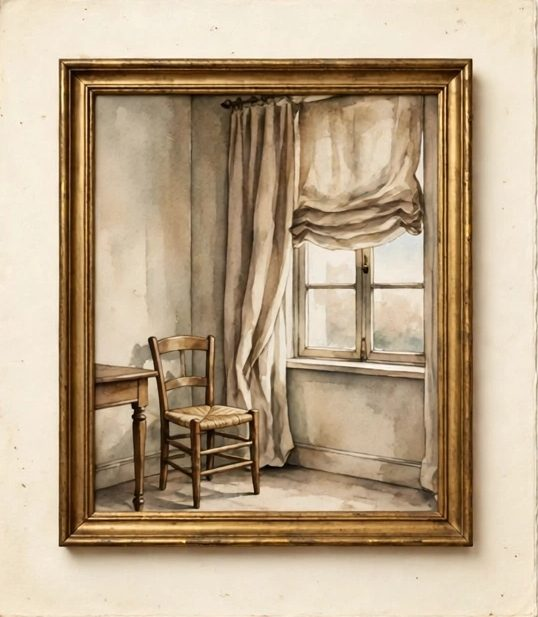
A quiet room with its curtains half drawn, one chair turned toward the light.
Visitors sometimes ask, standing in this part of the gallery, when the forgiveness happens — as if the difficult rooms were a corridor with a ceremony at the end of it. The answer is a house rule, and it is posted nowhere because it is practiced everywhere: forgiveness is not a house rule. It is not scheduled, not required for the keeping of the rooms, and not the price of the keeper's own peace. Where it has happened in this life, it happened the way weather changes — on its own schedule, uncommanded — and where it has not happened, the rooms are kept anyway, at the same standard.
The house is firm on this because commanded forgiveness corrupts two things at once. It corrupts the record, which would have to pretend a settlement that never took place; and it corrupts the thing itself, since forgiveness produced under orders, to satisfy a visitor or a doctrine, is a performance wearing the word's clothes. The keeper would rather keep an honestly unforgiven room than a theatrically settled one. Meanwhile the practical work of the gallery goes on untouched by the question: the portrait is dusted, the lamp is trimmed, the harm stands named once in the register, and none of that waits on anyone's absolution.
Nor does the absence of forgiveness license its opposite. The room next door to an unforgiven portrait is not a shrine to grievance; the keeper does not warm their hands at it, does not organize the corridor around it, does not require new acquaintances to be briefed at its door. Unforgiven, in this house, is a quiet administrative state, like a letter unanswered: noted, filed, and not read aloud at breakfast. Some such rooms have softened across decades without any decision being taken. Some have not. The register records both outcomes in the same handwriting, because the handwriting is the keeper's, and the keeper's rule is only this: nothing here is forgiven on command.
71Some Rooms Are Visited Rarely, and That Is Allowed
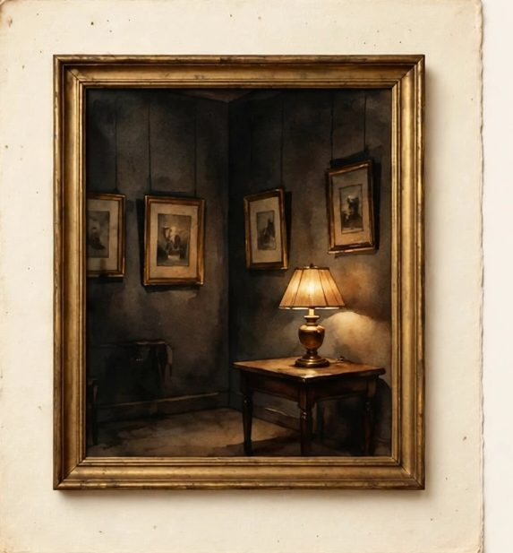
A lamp lit in the dimmest room of the gallery, burning low and steady.
Not every kept room is a visited room, and the house keeps the two ideas separate on purpose. A portrait can be dusted by the keeper on the regular rounds — acknowledged, maintained, kept in honest repair — without the keeper ever sitting down in its chair for an afternoon. Some rooms are like that for years at a stretch. The register does not mark the absence as avoidance, and it does not mark it as wisdom either. It marks it as a visiting pattern, which is all it is: the record of where a life, finite in hours, actually spends its attention.
Rare visiting is sometimes mistaken, from outside, for unfinished business — as if a room unentered were a debt unpaid. The house disagrees, gently and on the record. Attention is not owed in equal shares to everything that ever happened. The difficult rooms were formative once; they are not entitled to a tithe of every later year. A keeper may pass a door for a decade with nothing more dramatic in mind than that the day's work lies elsewhere, and the passing is not a symptom. It is a schedule. The gallery's brightest rooms did not get bright by the keeper hiding in the dim ones to prove a point.
And yet the rarely visited rooms are not abandoned, which is the other half of the allowance. The lamp in them is kept in oil against an unplanned hour — a piece of news, an anniversary, a face in a crowd — when the keeper may want the room ready, its chair dry, its record legible. Readiness is the keeper's whole obligation here, and it is discharged quietly, on the rounds, without ceremony. A room can wait years for its keeper without reproach. Houses are patient in a way people are not required to be, and this one lends its patience to both sides of the door.
72The Keeper Keeps the Lighting Even Here
The last room of this hall is kept for a discipline rather than a person: the lighting. Everywhere else in the house the lamps are a courtesy; here they are the argument. The keeper trims the lamps in the difficult rooms to exactly the flame used in the beloved ones — not brighter, which would be an interrogation, and not dimmer, which would be a sentence passed in the dark. Even light is the house's whole method in miniature: enough to see the portrait clearly, never arranged to make it look worse, or better, than it is.
Even lighting is harder to keep than it sounds, because the keeper's own weather keeps changing the corridor. On bitter days the hand wants to lower the lamps here and raise them in the rooms of the kind; on sentimental days it wants to do the reverse, gilding one wall and shadowing another. The register corrects for weather the way a careful sailor corrects for current: by reference to fixed marks. The fixed marks are the plain facts — what was given, what was done, what it cost, what it built — and by them the lamps are reset each season, whatever the mood at the door.
What even lighting buys, in the end, is trust — the visitor's, and more importantly the keeper's own. A gallery that can be caught flattering its favorites or punishing its difficult rooms is a gallery whose every portrait becomes suspect, including the tender ones. But a house that lights its whole cast by one standard can be believed about any single room in it. That is why this discipline closes the hall: not as decoration, but as the warranty under which everything in the six rooms before it was written. The lamps are lit. The light is the same here. The keeper moves on.
73The Dead and the Distant
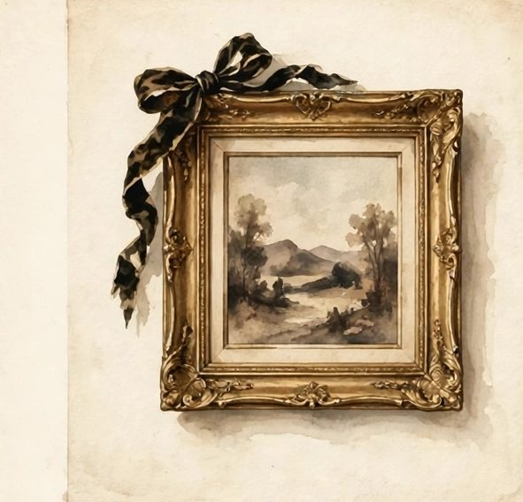
A portrait frame with a dark ribbon at its corner, hung at the corridor's end.
The corridor turns here into quieter country. The rooms of this hall are kept for those who can no longer be written to — the dead, whose addresses the register has closed, and the distant, whose addresses it has simply lost, or learned not to use. The house keeps the two together because, from the keeper's chair, their rooms feel alike: the portraits go on mattering, the conversations do not resume, and the keeping is all on one side now. What changes is not the love or the grievance. It is the direction the upkeep travels.
A room kept for the dead is kept differently from all the others, and the keeper learns the difference slowly. There will be no new evidence. No letter will arrive to revise the portrait, no late apology, no unexpected kindness at a station to add a final, softening chapter. The record is closed in a way no living room's record is closed. This is not a tragedy the house performs; it is a condition it respects. The portrait is therefore kept with a particular tenderness toward its own finality: what is hung here is what there is, and there will not be more.
The distant present the mirror image of the same condition. Their records are not closed — somewhere they are presumably still adding chapters, revising themselves, becoming people the keeper would not fully recognize — but the additions happen in another country, off the register's map. The house keeps their rooms as they were left, neither updated by imagination nor revised by rumor. It is a strange honesty, keeping a portrait of someone who has certainly changed, and the keeper practices it deliberately: better the true old portrait than a fresh invention wearing their name.
74The Rooms of Those No Longer Living
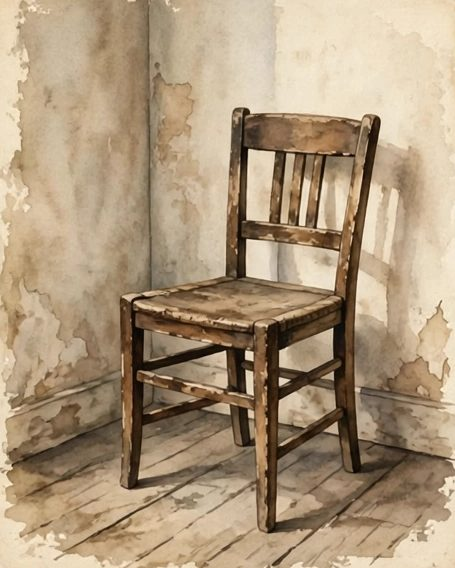
A chair kept in its place after many years, its cushion holding its shape.
The first rooms of this hall belong to the dead outright, and they are the quietest in the house — not empty, not hushed by rule, simply finished, the way a garden is finished in winter without being abandoned. The keeper does the rounds here as elsewhere: dust taken off the frame, the chair straightened, the lamp checked and, mostly, left unlit, because these rooms no longer keep visiting hours. What is done here is maintenance of a relationship that has changed its nature: from a conversation, however one-sided it had become, into a keeping.
It surprises visitors how ordinary these rooms are allowed to be. There is no shrine furniture, no velvet rope of reverence, no requirement to lower the voice. The dead of this house were people, and their rooms keep their proportions: the funny ones are still funny in the register's telling, the difficult ones have lost none of their difficulty, and the beloved ones are not promoted into saints by the mere fact of being gone. Death, in the keeper's accounting, is a change of address, not a promotion. The portraits stay human-sized, which is the only size at which they were ever true.
What the rooms ask of the keeper is mostly steadiness. A portrait of the dead does not change, but the keeper does, and so the same face is met, across the decades, by a stranger pair of eyes each time: the child who feared them, the young adult who argued with them, the older keeper who has begun, unsettlingly, to catch up with their age. The room holds still through all of it. That stillness is its gift and its limit, and the house is honest about both: the dead keep their rooms here, and the living keep changing in the corridor outside them.
75They Go On Shaping, Quietly
Death closes a correspondence; it does not close an influence. The dead go on shaping the keeper in ways too ordinary to be called haunting: a phrase of theirs surfacing, uninvited and exactly apt, in the keeper's own mouth; a standard they set still quietly auditing the work; a recipe, a route, a way of sharpening a tool, performed decades later by hands that learned it by watching theirs. The register records this without ceremony. Influence was never a conversation in the first place; it was a transfer, and transfers do not stop because the giver has left the building.
The quietness is the point of this room's title. The shaping done by the dead arrives without agenda, because they no longer have one; it cannot be lobbying, or guilt, or a message from anywhere. It is simply what was deposited, drawing its small regular interest in the keeper's habits. A living shaper can still surprise, retract, revise. The dead shape the way foundations shape: constantly, invisibly, and only ever in the past tense they actually lived. The keeper checks the foundations on the rounds, notes a crack or a soundness, and neither summons the builders nor blames the building on them.
There is a temptation, in houses like this one, to promote the dead into advisers — to consult them before decisions, to report outcomes at their portraits like dispatches. The keeper resists it, out of respect running in both directions. The dead did their shaping in their lifetimes, with the information their lifetimes gave them; to keep conscripting them into the keeper's present would be to deny them their rest and the keeper their adulthood in a single gesture. What they built still stands where they built it. What gets built now is signed by the living, and the register is careful, always, about the signatures.
The Portrait Desk
One desk receives all correspondence for this house — questions, corrections, and word of any portrait room: a hand remembered, a lesson landed late, a stranger never thanked, and how the gallery looks from the far end. It is read in the order it arrives.
76A Visit Is Not a Correspondence
Fresh flowers in a vase beneath an old frame, the petals bright against the gilt.
The keeper visits these rooms; the keeper does not write to them. The distinction sounds small and is, in practice, the whole etiquette of this hall. A visit makes no demand. It arrives, it sits a while in the presence of what was, it leaves nothing behind that requires an answer. A correspondence, even an imaginary one, is a different instrument: it drafts replies, it waits, it begins to expect — and expectation, aimed at the dead or the distant, curdles quietly into either grievance or theater. The house permits visits in unlimited number. It discourages letters that cannot be sent.
This is not coldness, and the room is at pains to say so. The visits here can be long and warm; the keeper brings news the way one brings flowers — not expecting the portrait to bloom, but because bringing is what the living do. Anniversaries are observed. Birthdays of the dead are still, quietly, birthdays. The chair in each room is comfortable, because grief that must stand will not stay long enough to do its work. What the etiquette forbids is only the reply expected, the sign demanded, the dream audited like a mailbox. Visit, by all means. Then go back down the corridor to the living, who can answer.
The distant fall under the same etiquette, with one amendment of mercy: the door is not barred to their return. People do, occasionally, come back from distances — older, revised, unrecognizable in all but the laugh — and the house has a procedure for it, which is to open the door and put the kettle on, not to present the register for inspection. The room kept in their absence was never a reproach, and it is not produced as one now. A visit was never a correspondence; neither, it turns out, was an absence ever an indictment. The corridor is good at waiting without keeping score.
77What They Would Say Now Is Not Ours to Write
A reading chair by the window, a shawl folded over its back, the light held steady.
It is the easiest forgery in the world, and the most forgiven: putting present-day words into the mouths of the absent. The dead father is made to approve the new career. The distant friend is made to concede, graciously, the old argument. The register forbids the practice absolutely, and this room is where the reason is kept. What they would say now is not ours to write — not because the guess would always be wrong, but because the right to say it now belongs to people who can no longer, or no longer choose to, exercise it here.
The keeper's own record shows how unreliable such ventriloquism is, even in good faith. The words we compose for the absent have a suspicious habit of agreeing with us, maturing exactly as we matured, forgiving precisely what we most need forgiven, condemning precisely what we have already condemned. Real people, in real corridors, were never so cooperative. The genuine article surprised, interrupted, changed the subject, held the unfashionable view to the end. A portrait that always says the convenient thing is not a portrait anymore. It is a puppet, and this gallery does not keep puppets.
What is permitted is humbler, and the house permits it generously: remembering what they did say. The actual words, where they survive, are kept like pressed flowers — a sentence from a kitchen in another decade, a judgment delivered in a garden, advice so characteristic it can still be heard in the original voice. Those are evidence. The rest — the verdicts they never delivered on lives they never saw — is left in the decent blank where it belongs. The keeper would rather keep an honest silence at a portrait than a fluent invention, and the silence, here, is part of the portrait's truth.
78The Distant Keep Their Distance; the Room Keeps Its Chair
Some rooms in this hall belong to people who are alive, well, and elsewhere — a fact the house states without italics. The distance is theirs, and it is kept the way a confidence is kept: without negotiation, without a campaign to close it, without the corridor being rearranged to face their door. The keeper's whole duty, where the living distant are concerned, reduces to one piece of furniture. The room keeps its chair. Not a shrine, not a trap, not a reproach upholstered — a chair, in case, kept in repair, in case the distance ever ends on their side of it.
Keeping a chair is harder work than it looks, because distance invites stories. The keeper is tempted, across the years, to furnish the silence: to decide what the distance means, to assign it a motive, to let the room's chair be silently reclassified as evidence — of their coldness, of the keeper's failure, of somebody's settled guilt. The house forbids the furnishing. The chair stays a chair. What the distance means is the distant person's business, in a country the register does not map, and the portrait on the wall records only what was true before the distance began: that they mattered, and mattered here.
There is no timetable attached to the chair, and that is the final courtesy. It is not kept for a season, against a deadline of reconciliation, after which the room converts to storage. It is kept the way the house keeps everything it has decided is true: indefinitely, and without making a subject of conversation about it. If the chair is never used again, it will still have been the right furniture — the record of a keeper who, when someone he could not follow went far away, neither chased nor cursed the distance, but kept one honest place ready in the room and got on with the living.
79Unfinished Conversations Stay Unfinished
Two cups on a table between two chairs, one of them untouched.
Almost every room in this hall has a sentence in it that was never finished — the apology rehearsed and never delivered, the question saved for a next meeting that history quietly cancelled, the thing that was going to be said when the moment was better. The house rule for such sentences is austere and, the keeper has found, merciful: unfinished conversations stay unfinished. They are not completed in imagination, not concluded by decree, not tidied into a shape they never had. The register leaves the line trailing exactly where life trailed it off, and binds the volume anyway.
The temptation to finish them is constant, and it grows better dressed with age. Surely, now, one knows what one would say; surely the other, older or gone, would have answered kindly; surely the conversation can be brought, in the quiet of this room, to the ending it deserved. The house treats all such sureness as a forgery risk. An ending supplied by one party is not an ending; it is a monologue in two costumes. What actually happened — interruption, interruption, silence — is less satisfying and more true, and the gallery has always preferred true to satisfying when the two were offered separately.
Left unfinished, the conversations do a quiet piece of work the finished ones cannot: they keep the keeper honest about time. A finished story flatters its teller with the sense that life resolves; the trailing sentence admits what every keeper learns anyway — that lives are mostly middles, that people exit mid-argument and mid-sentence and mid-love, and that this is not a defect in the record but the record's most common entry. So the unfinished stays on the page, unembarrassed. The house does not consider a dangling thread a failure of keeping. It considers it a form of accuracy.
80The Inheritance Was Never Only Property
A set of keys and a toolbox left in good order, waiting on the bench.
When the dead of this house are settled in the world's paperwork, the inheritance is usually described in property: a house, a sum, a ring, a debt. The register keeps a longer inventory. The real estate of the dead, as it actually passes, is mostly intangible and mostly unlisted: a way of holding a tool, a standard for a finished job, a sentence that still opens arguments in the keeper's head, a recipe no lawyer ever appraised. Some of it was bequeathed on purpose, across a table, in so many words. Most of it changed hands without either party noticing the transfer.
Not all of it is welcome, and the register declines to pretend otherwise. Inheritances of the intangible kind include the cautions that outlived their usefulness, the feuds accepted sight unseen, the fear handed down like furniture nobody liked but everybody kept. The keeper inventories these with the same honesty as the treasures, because an estate cannot be administered in ignorance of its contents. Some items are kept in service. Some are kept in storage. A few, after long deliberation, are respectfully retired — which the house permits, since inheriting a thing was never the same as being sentenced to use it forever.
What surprises the keeper, doing this inventory late in the corridor, is how much of the inheritance was never property because it was never owned — it was only practiced nearby, and caught. You cannot probate a laugh, a standard of mercy, a way of beginning again after a public failure; yet these pass between generations more reliably than the silver ever did, and with less paperwork. The register therefore closes this hall's account with the house's driest sentence: the estate was larger than the will suggested, and most of it arrived without signatures, and the keeper is its executor still.
81Rooms Kept for People Who Never Knew Yours
There are rooms in this gallery kept for people who never knew the keeper's name, and some who never knew the keeper existed. The novelist whose sentences rearranged a young reader's furniture. The craftsman whose work was watched once, through a fence, by a child who went home and began to practice. The register gives them no special wing and no apology; their frames hang among the others, sized by what they did rather than by how long they stayed in view. These shapers worked at a distance they never chose, in an audience they never saw, and the house keeps their rooms anyway, because shaping does not require an introduction to be real.
Such rooms have a particular quiet. There is no shared history to arrange on the shelves, no anniversary to observe, no version of the story the other side could correct. The keeper tends them with a restraint the shared rooms do not need: gratitude without claim, admiration without appetite. There is no chair to set out for a visit that will never happen, no conversation to rehearse in the corridor on the way in. The keeper simply keeps the frame dusted and the light even, the way a room is kept for its own sake. Nothing is owed in either direction, which makes these among the freest portraits in the house, lit by attention alone and asking nothing back.
They also teach the gallery its most portable lesson. If a stranger's careless sentence can furnish a stranger's life for decades, then the keeper's own unconsidered sentences are furnishing lives somewhere, in rooms the keeper will never be shown. The entries for these rooms are the shortest in the register: a name sometimes missing altogether, a date no one can fix, and under 'what was given,' a single line that the keeper has never been able to improve on. The house does not make a doctrine of this, only a habit of care. Words leave the house like weather leaves a valley. These rooms stand as the record of weather received, and a quiet instruction about weather sent.
82Grief Has a Chair Here, Not a Throne
A portrait frame hung facing the garden window, taking the light it can get.
In the rooms of the dead, grief is given a chair. It is a real chair, kept in its place, and the keeper sits in it on the days when sitting there is the honest work of the hour. But it is a chair, not a throne, and the distinction is the whole furnishing policy of this wing. The chair stands in the corner where the light reaches it in the morning, and it is not hidden when visitors come; the house is not ashamed of it, only exact about its size. Grief is a guest with standing in the house. It is not the house's ruler, and it does not get to rearrange the other rooms.
Left to itself, grief would expand, as all strong weather does. It would move into the bright rooms and draw their curtains, file the living under the losses, and set the gallery's clock to the worst hour. The chair is the house's gentle refusal of that expansion. Grief may stay as long as it needs; it may be visited daily, hourly, in the bad seasons at every turn of the corridor. The portraits of the living hang in the next rooms and keep their own hours; the house will not have them dimmed by a tenancy that belongs, by rights, in one room of the wing. What it may not do is hold court over the portraits of the living.
Some keepers fear the chair, sure that if they sit down they will never stand up, and so they pace the corridor for years. The house's experience is kinder. A grief that has its chair stops rattling the other doors. It can be found when wanted, left when the day requires leaving, and honored without being obeyed. Keepers who finally sit find the sitting has edges — an hour, an afternoon — and that grief, given a boundary, keeps it more faithfully than grief left to roam the whole house at will. The dead, who loved the keeper in working order, would presumably approve the arrangement. The chair stays. The throne was never built.
83The Portrait Is Not the Person
A single chair in a quiet room, a cushion on it, the light kept soft.
Every portrait in this gallery is a likeness made by one pair of eyes, in one light, out of the years those eyes happened to witness. It is not the person. The person was larger, longer, and mostly elsewhere: a whole life lived in rooms the keeper never entered, among people the keeper never met, in years before and after the shared corridor. The frame was chosen years after the sitting, too, which matters: memory selects the moment, and then swears the moment was the whole. The portrait holds what passed between two people. It does not hold the person entire, and the house insists on the difference.
The confusion is natural and worth resisting. A portrait kept for forty years acquires the authority of a document, and the keeper begins to defend it as one: this is who she was, this is what he did, full stop. But the frame shows a selection, made by memory, which is an editor with strong opinions and a loose archive. Other keepers of other galleries hold other portraits of the same sitter, and some of theirs would not match. All of them may be honest. None of them is the whole room.
So the house treats its portraits the way a careful reader treats a memoir: as testimony, not as transcript. The sitter remains free of the frame. This is not a demotion of the gallery but its honor. A portrait that knows it is a portrait can be loved without being sworn by, revised without being destroyed, and kept for a lifetime without once pretending to be the life itself. A portrait may even be corrected in the margin, in pencil, when later years bring new evidence, and the frame is none the worse for the annotation. The person walks on, unframed. The likeness stays, and is enough.
84The House Does Not Confuse the Two
The final rule of this wing is a housekeeping rule, posted where the keeper will pass it daily: the portrait is kept, the person is not. It sounds cold until it is practiced. It means the dead are not summoned to ratify the keeper's later decisions. It means the distant are not imaginary companions in dialogues they never joined. The rule is written in the register rather than framed on the wall, because it governs the keeper's habits, not the visitors' admiration. It means no portrait in this house is asked to do the work of a living presence, or blamed for failing at a job it never held.
Confusing the two is the gallery's one real temptation, because the portraits are so available and the people so often not. A portrait never interrupts, never ages past its frame, never disappoints in a new way. Real people, and real absences, are less convenient. The portraits, for their part, make no complaint about the arrangement; they were never promised a congregation, only a wall and an even light. But a house that prefers its portraits to its people has stopped being a gallery and become a sealed wing, and the register watches for the signs: visits growing longer, the living rooms growing quieter, conversations addressed increasingly to the frames.
So the keeper closes this wing the way all the others are closed, with the lamps tended and the doors left on their ordinary latches. The dead keep their rooms, the distant keep their distance, and the portraits keep their likenesses, each in its own category, each honored in its own way. Tomorrow the corridor will be walked again, past these doors as past the others. The corridor lamps are turned down in their turn, and nothing in this wing asks to be left burning. The house stands by its distinctions. They are what let the keeping stay love, and not become a haunting.
85Shaped Back
A corridor with doors opening both ways, the light falling evenly along it.
Every gallery has a direction it assumes, and this one assumed it for seven halls: the portraits shape the keeper, and the keeper walks the corridor receiving. This hall turns the traffic around. Influence, looked at honestly and over enough years, runs both ways down the corridor. The keeper was never only the surface being worked. The first seven halls were hung to be read in one direction, and read that way they were not wrong — only incomplete, the way a street is incomplete until someone walks it home. The keeper was also a pair of hands, and some of the portraits in this house were framed, in part, by being known by the keeper.
This is not a late claim to credit, and the house is careful with the proportions. Most of what the keeper received outweighs, by any measure, what the keeper gave, and the register does not pretend otherwise. But a gallery that records only one direction tells a flattering falsehood of its own kind: it makes the shapers into forces and the keeper into furniture. The register, revised in this hall, adds a second column to many old entries — narrower than the first, kept in a smaller hand, but ruled in the same ink. Nobody in this house was furniture. The shaping was an exchange, uneven as most exchanges are, and real on both sides.
So this hall hangs its portraits in facing pairs, the way the corridor actually worked. A teacher altered by a difficult student. A parent educated by a child who asked the questions the parent had avoided. A friend steadied, once, by the very person they usually steadied. One pair faces across the landing where the light is best, and visitors tend to stop there without knowing why; the house lets the arrangement make its own argument. The keeper walks between the pairs more slowly than anywhere else in the house, reading the two-way traffic in the grain, and finds the gallery truer for it.
86Influence Runs Both Ways Down the Corridor
Two workbenches facing each other across a shared pool of lamplight.
The corridor of this house is not a one-way street, whatever the earlier halls implied. Influence travels down it in both directions, on no fixed schedule, and often in the same conversation. The elder explains the craft to the younger and, in the explaining, discovers which parts of it were only habit. The child asks the innocent question and the parent hears, in their own answer, a belief they had not examined in twenty years. The register, in its earliest years, had only one column for this traffic, and the keeper spent a later year ruling the second column in, entry by entry, back to the first page. Both leave the corridor shaped. Neither was only the shaper.
The traffic has its own etiquette, which the house has learned by watching. Influence offered is received or not, at the receiver's pace; influence imposed arrives as weather, unwelcome and unreturnable. The keeper's arrivals in other people's corridors were of both kinds. Some of the shaping the keeper did was deliberate and kind. Some was accidental. Some, in the difficult years, was the kind that other keepers now keep difficult rooms for. The house does not flinch from this part of the record; a corridor that only carried kindness would make a prettier archive and a falser one. The register records the traffic without grading it into a verdict.
What matters to this house is that the corridor stays open in both directions for as long as both parties are walking it. A teacher who cannot be taught by the corridor has stopped traveling and started posing. A keeper who believes influence only ever flowed inward will misread every room in this gallery. The doors here open both ways because they always did. Visitors sometimes ask why the doors were rehung at such trouble, as if the old swing had not served; the keeper's answer is that it served, in the way a first draft serves — honestly, and in need of revision. The house merely stopped pretending otherwise, and hung the hinges where everyone could see them.
87You Shaped Your Shapers, Too
It is a strange hour in a keeper's life when the register is opened at the other end, and the entries appear in the shapers' own handwriting. The mother who writes that she learned patience from the child she was supposedly teaching it to. The old teacher who says the difficult class, the one with the keeper in it, was the class that made him finally understand his subject. Some of the entries are only a line long, tucked at the foot of a page the keeper had read a dozen times without seeing it. The keeper reads these entries with an emotion the gallery has no small name for.
Part of it is simple reciprocity discovered late: the books balanced, after all, in both directions. But part of it is a correction to the story the keeper has been telling for years, in which the shapers were finished people and the keeper was the raw material. They were not finished. They were mid-work, all of them, and the keeper was among their materials and their tools. A parent is shaped by the act of parenting as surely as a child is shaped by being parented. The corridor ran under both their feet.
The house keeps this knowledge in a place of honor because it dissolves the last of the debt. If the shaping ran both ways, then nobody in the gallery is a creditor and nobody is a debtor; they are co-workers who happened to share a corridor for a while. The keeper closes the register on these entries with something easier than gratitude. Something more like recognition. It also changes how the older rooms are read: a portrait of a teacher, reread in this light, shows a person still learning his trade at the very moment he was supposed to be dispensing it. The portraits nod, as portraits do, in both directions at once.
88The Clay Also Leaves Fingerprints
A clay pot fresh from the wheel, its fingerprints still showing in the glaze.
The oldest metaphor in this house is also the one it corrects most often. The keeper was not clay. Clay does not ask questions back, does not resist the thumb in one place and yield in another, does not leave the wheel halfway through and return with its own ideas about the shape. Every shaper who ever worked on this keeper discovered the same thing: the material pushed back. The wheel, in this house's version of the craft, was never the shaper's alone either; it turned because both parties kept their weight on it. And the pushing back left marks, because the material has hands of its own.
Fingerprints in clay are usually counted a flaw, smoothed away before the firing. This house counts them evidence. The keeper's fingerprints are in the shapers' later work: in the teacher who softened a rule after one student's stubborn case, in the friend who learned a new frankness from being answered frankly, in the parent whose certainties carry, to this day, small dents in the exact shape of the keeper's childhood questions. Shaping, between people, is a contact sport played gently. They are small marks, mostly — the register is not inflating them; a softened rule, a new frankness, a certainty with dents. But they are in the fired clay, and firing does not take them out. Everyone leaves the wheel marked.
So the register refuses the pure-pot theory of a life. Nobody here was only formed, and nobody did only forming. The keeper's rooms were shaped by many hands, and those hands were shaped, in their turn, by the keeper's resistance, appetite, gratitude, and refusal. The fingerprints are not blemishes on the portrait wall. Visitors looking for a flawless wall are gently redirected to the corridor of the living, where the same fingerprints are still being left, daily, in work that has not yet cooled. They are signatures, left by the sitter on the frame, proving the sitter was alive and working the whole time.
89Apprentice, Then Colleague
An apprentice's bench raised to stand beside a master's, at the same height.
There is a season the gallery watches for in every long apprenticeship, and it arrives without ceremony: the apprentice's bench is moved, one ordinary morning, to stand beside the master's instead of below it. Nothing is announced. The work simply begins to be discussed in a different grammar, plans instead of instructions, disagreements instead of corrections. The keeper remembers the morning in more than one craft. Sometimes the change showed first in small things: being handed the good tool without comment, being asked — actually asked — what the plan should be. The bench did not move. The standing did, and everyone in the workshop could feel the floor change.
The passage from apprentice to colleague is the shaper's success and, often, the shaper's quiet grief. A teacher whose students never leave the lower bench has failed at the main thing, however fine the work produced there. The house has watched the other kind as well: the master who keeps the lower bench polished and occupied for decades, and calls the arrangement loyalty. A teacher whose students rise is repeatedly bereaved of excellent apprentices and repeatedly rewarded with colleagues. The house hangs this room for the ones who managed the transition gracefully, who learned to be argued with by their own teaching and called it, correctly, the harvest.
The keeper's side of the passage has its own duty. To remain an apprentice after the bench has moved is its own small betrayal, a way of keeping the shaper responsible for a life that has been handed over. The register notes the keepers who stood up straight at the higher bench, accepted the colleague's share of blame and credit, and found, in time, benches being built lower than theirs. And there is a further courtesy in standing up straight: it frees the shaper's hands for the next apprentice, whose bench is already being carried in. The corridor provides. It always has traffic scheduled in both directions.
90Saying No to a Shaper, Kindly
Every keeper eventually stands in a shaper's doorway with a refusal in hand, and the house keeps a room for the manner of it. The refusal may be small, a method not adopted, a path politely declined at the exact crossroads where the shaper pointed with such hope. It may be large. What is refused matters less, the house finds, than whether the refusal is owned outright or smuggled out in installments of silence. Either way, the register's counsel is consistent: a no to a shaper is a serious sentence, and it deserves to be said kindly, completely, and once, rather than leaked out over years of evasions.
Kindness, here, is not softness of content. The shaper is owed the truth about the refusal, because anything less leaves them teaching a student who has secretly left the room. What kindness governs is the delivery: in person where possible, without an audience, without a prosecutor's inventory of everything else ever resented. The keeper has delivered such refusals well and badly, and the gallery keeps both kinds. The badly delivered ones still sting in the telling. The well delivered ones mostly do not, which is the whole case for the discipline.
What surprises keepers, afterward, is how many shapers survive being refused. The good ones, the house notes, often respect the refusal more than they would have respected obedience; a student who can say no has understood the deepest lesson on the syllabus. Some doors close at such a conversation, and the house keeps those rooms as it keeps all the others. The house lights these rooms without special ceremony; a refusal delivered kindly is not an ending to be mourned in the corridor, only a door hung true. Some stay open for decades, with the refusal standing between the two people like a piece of honest furniture both have learned to walk around.
The Portrait Desk
One desk receives all correspondence for this house — questions, corrections, and word of any portrait room: a hand remembered, a lesson landed late, a stranger never thanked, and how the gallery looks from the far end. It is read in the order it arrives.
91Outgrowing Is Not Ungratefulness
A door politely closed from the inside, its handle worn bright by use.
Outgrowing arrives disguised as disloyalty, and the house keeps this room near the front of the hall because the disguise has fooled so many keepers. A way of working that fit at twenty chafes at forty. A belief absorbed whole from a beloved shaper begins, under the keeper's own experience, to need alterations. The alterations feel like betrayal, as if the keeper were editing a portrait behind the sitter's back. The house has watched keepers apologize to portraits for the crime of continuing to live, and it keeps a straight face and a steady lamp for all of them. The register is blunt about it: the treason is imaginary. The growth is the point of the whole arrangement.
No honest shaper teaches in order to be frozen into. The parent's way was built for the parent's weather; the teacher's method was cut to the teacher's hand. To wear either unaltered for a lifetime would not be fidelity but storage, and the shapers did not spend their influence to produce a storage facility. A costume is kept in a wardrobe and taken out unchanged; a capacity lives in the hands, and is altered by everything the hands have done since. What they hoped to pass on was the capacity, not the costume: the judgment to alter the way when the weather changed, including the judgment to alter it against their advice.
The keeper who outgrows a shaper's way owes the shaper exactly one thing, and it is not obedience. It is honesty about the alteration, offered without triumph and without apology, the way one reports a change of address. Some shapers receive the news as the harvest it is. Some receive it as loss, and the room must hold their disappointment too, without letting it vote. The disappointed shaper's portrait is not taken down in retaliation, and the keeper's alteration is not reversed in apology; the room is large enough for both the hanging and the hurt. The portrait stays hung. The way evolves. That is not the failure of shaping. That is shaping, completed.
92The Portrait of the Keeper, Hung by Others
A young portrait hung among older ones, its frame a different wood entirely.
Somewhere down the corridor there is a room this keeper did not hang, and the house is scrupulous about leaving its door on the latch: the portrait of the keeper, kept in other people's galleries. It exists. Teachers describe the student they remember, in terms the student would only partly recognize. Old friends carry a version from the shared years and update it slowly, if at all. Somewhere, in a difficult room of someone else's house, the keeper hangs as the one who closed a door, or left, or said the necessary thing badly.
The house forbids two responses to this knowledge. The first is campaigning: the keeper may not tour other galleries correcting the portraits, explaining the frame, adjusting the likeness by letter and visit. The portraits belong to their keepers, as this gallery belongs to its own, and the same rule that protects this house's honest errors protects theirs. Nor may the keeper send emissaries — a mutual friend briefed over coffee, a casual question planted at a reunion — to adjust the likeness by proxy; the house counts that as campaigning with cleaner hands. The second forbidden response is despair. To be misremembered in some rooms is the ordinary tax on having been present in them at all.
What remains is a steadier use for the knowledge. Knowing that one's own portrait hangs elsewhere, imperfectly, is the best training in hanging others gently here. The keeper of this gallery has seen the frame from inside the frame, and it changes the hand on the hammer: lighter, more provisional, readier to leave space around the likeness for everything the keeper of it never saw. On the way out of this room the keeper passes the gallery's own most disputed frame, and the hand slows, as it should, before it reaches for the cloth. The portrait down the corridor is not this house's business. The humility it teaches is.
93What You Pass On, Passing Through
The keeper discovers, somewhere in the middle years of the gallery, that the traffic has begun moving through them. A younger colleague repeats, unknowing, a phrase the keeper once received from a teacher and passed on without attribution. A child in the house's orbit handles a difficulty with a tool the keeper did not so much teach as leave lying around. The keeper learns of these forwardings by accident, mostly — overheard at a doorway, reported years late by a third party who assumed the keeper already knew. Shaping, it turns out, is not stored by the keeper. It is forwarded, often without the keeper's signature anywhere on the parcel.
This hall gives that forwarding a room because it changes the keeper's relation to everything received. What was given was never a possession; it was a consignment. The strict teacher's exactness, the friend's borrowed courage, the stranger's necessary sentence: all of it is in transit through this house toward houses not yet built. The keeper is a corridor with portraits, and corridors are for passing through. Nothing is held in this house under seal; even the portraits hung in the dimmest light send their sitters' lessons down the corridor in the keeper's ordinary conduct. Even the difficult rooms forward something, if only a precise knowledge of which doors not to close in other people's faces.
The house is modest about the keeper's own additions to the consignment. Mostly the keeper forwards what arrived, somewhat worn, somewhat adapted to local weather. But occasionally the register can trace an improvement, a cruelty edited out of a method, a kindness added to a standard, and there the keeper's fingerprints show clearest. The exit of this house is not a grand door but a working one, used daily, its step worn by parcels carried out rather than by visitors arriving. To pass a thing on better than it arrived: the gallery can think of no finer definition of a shaper, and it hangs this room within sight of the exit, where the forwarding happens.
94The House's Next Rooms Will Have Your Furniture
A chair mid-corridor, being carried toward a room still smelling of paint.
The gallery is not finished, and its unfinished end is the subject of this room. Down the corridor, past the rooms of the dead and the rooms of the two-way traffic, there are doors the keeper has not opened: the rooms of the future, which will be furnished, in part, out of this keeper's effects. There are no frames yet on those walls, only the smell of paint and the outline of light where pictures will hang. Someone not yet met will one day keep a room for this house's keeper, and the furniture in it is being selected now, daily, by what the keeper models, permits, repeats, and repairs.
The house treats this not as pressure but as plain architecture. Every keeper in these portraits furnished a future room without knowing its address; the first hands had no idea which of their habits would be load-bearing sixty years on. It follows that the keeper's own habits are similarly unmarked for importance. The offhand kindness may be the beam. The repeated impatience may be the draught. The register does not say which. It only notes that the selection is not made by intention but by repetition, and that the keeper is therefore advised to repeat carefully.
There is comfort in the arrangement as well as duty. The keeper's rooms here will not be the whole of the future gallery, any more than the shapers' rooms are the whole of this one. The future keeper will edit, outgrow, refuse kindly, and hang new portraits in better light. What this house sends forward is not a finished design but materials and a few worked examples. The keeper walks back down the corridor past the older rooms with a somewhat altered tread, having seen the far end under construction. The rest is theirs, as the rest here was the keeper's. The corridor continues. That is its oldest promise.
95Nobody Here Is Only Clay
A door standing open at the far end of the gallery, the day coming through it.
This hall closes with its founding correction, hung where the keeper must pass it on the way out: nobody here is only clay. Not the keeper, who pushed back against every hand and left fingerprints in all the glaze. Not the shapers, who were themselves mid-work, learning their crafts on the keeper as surely as the keeper learned from them. The gallery has no raw material in it anywhere. Even the briefest portrait in the house — an hour's stranger, a season's friend — shows tool marks in both directions, if the keeper looks at the frame in a strong light. It has only people, at various stages of being worked on by one another.
The correction matters because the clay theory, believed, distorts every room it touches. A keeper who thinks they were only shaped will under-own their choices, crediting the portraits with decisions the keeper in fact made. A shaper believed to be only a shaper becomes a statue, and statues cannot be argued with, forgiven, outgrown, or thanked as equals. The two-way doctrine of this hall is the gallery's safeguard against both errors. Influence is real. It is also mutual, partial, and resisted, and those three qualifiers are what keep it honest.
So the keeper leaves this hall the way the corridor was always meant to be left: walking upright, at full height, among the portraits rather than beneath them. The shapers look down from their frames at a colleague now, whether they planned one or not. Some of them, the register suspects, would be pleased. Some would be startled. The house keeps the lights even and the doors on their two-way hinges, and closes the hall on its working truth: shaped by many, shaped back by many, and only clay in the sense that clay, too, pushes back.
96The Register Closes No One's File
The register of this house is a thick book, and the keeper has learned to be suspicious of its final pages. Entries have a way of reopening. A friendship filed as finished sends a letter after eleven years and is re-entered under a new heading. A shaper the keeper believed fully understood turns out, in some late document or conversation, to have had a whole other room of their own. The house therefore keeps the register in pencil more often than in ink, and closes no one's file with a flourish.
Closing a file is a temptation of tired keepers. It promises an end to the maintenance: no more airing, no more revising, no more being surprised by the dead or ambushed by the living. But a closed file is just a portrait that has been forbidden to change, and the gallery's experience is that the forbidden portraits are precisely the ones that burst their frames at three in the morning. The living go on altering. The dead go on being re-seen. The register's job is to stay open where life stays open, which is nearly everywhere.
So this hall ends not with a summary but with a practice: the keeper leaves the register on the desk, uncapped pen beside it, and walks the corridor home. Somewhere in the building a portrait is quietly becoming inaccurate, and another is ripening into accuracy, and both are allowed their process. The pen matters, too; it is the ordinary pen of the house, not a ceremonial one, because the entries it will make are ordinary entries — a corrected date, a softened sentence, a debt reclassified as a gift. The house does not finish its people. It keeps them, which is a different and longer commitment, and the register, open on the desk, is its signature.
97Step One: Walk the Gallery Slowly
A long gallery in soft light, its frames standing in a patient row.
The first step of this house is a pace, and it is set slower than the keeper's ordinary walking. The gallery cannot be done at corridor speed, the speed of errands and appointments, because portraits read at that speed reduce to names and verdicts: the good one, the hard one, the one who left. Slowness is the house's method of accuracy. At a walking pace meant for looking, the rooms recover their furniture. The lamps in this part of the house are lit for lingering, not for inspection, and the benches along the wall are placed for people who meant only to pass through. A portrait becomes a person again, with weather of their own.
The step is sized so because haste in this gallery is never neutral. The keeper who hurries is usually hurrying past something: a difficult room, a debt of thanks grown embarrassing with age, a grief whose chair is waiting. The slow walk does not force entry anywhere. It simply removes the alibi of speed, so that the skipping, when it happens, is honest skipping, chosen and known. The house counts that as progress. There is a bench halfway down this hall that the keeper has come to think of as the honest bench: whoever sits there has admitted, at least, which door they are not opening today. Chosen avoidance can be revisited. Rushed avoidance hides even from the keeper.
Keepers report that the slow gallery is longer than the fast one, though the corridor has not changed. Rooms open off it that haste had papered over: the brief ones, the strangers, the shapers whose names the keeper knows but whose work was never itemized. By the far end, the keeper's sense of the life has widened by several rooms, none of them new. The keeper, arriving at the far door, usually finds the errand that justified the haste still waiting on the desk, unharmed by the delay and rather smaller than it looked. They were always in the house. They were waiting for a pace at which they could be seen.
98Step Two: Choose One Room to Enter First
A single doorway lit in a dim gallery, its room beyond in quiet order.
Having slowed, the keeper is asked to choose: one room, entered first, before the corridor's noise of all the others can organize an itinerary. The step does not prescribe which room. For one keeper it will be the easiest portrait, to warm the hands. For another, the room avoided for a decade, before courage cools. The house is indifferent to the order and strict about the choosing. The house posts no list of rooms in order of importance at the entrance, because the order changes with the keeper's year, and last year's last room is often this year's first. A gallery entered everywhere at once is entered nowhere; attention, like a visitor, can only stand in one room at a time.
The chosen room gets the keeper's whole hour, and the hour changes it. A portrait looked at for an hour stops being a summary. Details the register had flattened return: the shaper's own difficulties, the season of the keeper's life in which the shaping happened, the parts of the story where the keeper was not the fragile party but the difficult one. The famous five are not demoted by the discipline; they are simply made to wait their turn like everyone else, which some of them bear better than others. Entering first is a discipline against the greatest hits, the five famous portraits that usually stand for the whole gallery and excuse the keeper from the rest.
There is also mercy in the sizing. One room is a possible task on a tired day; the whole gallery, faced as a single obligation, is how keepers end up visiting none of it for years. The house prefers a keeper who enters one room well and often to a keeper who resolves, annually, to do the entire corridor justice. The keeper who has entered one room returns to the corridor with a steadier hand for the next door, and the gallery knows this arithmetic compounds. Step two is the house's arithmetic of return: begin where beginning is possible. The other rooms keep. That is what rooms in this gallery are for.
99Step Three: Name the Shaping, Not Just the Person
The third step separates two things the keeper habitually fuses: the person and the shaping. It is possible to honor a person and still name, precisely, what their presence did; it is also possible to name the shaping without issuing a character. The step asks only for the shaping, in plain inventory language. Patience was learned here. So was flinching. The standard for honest work came from this room; so did the suspicion of praise. The keeper writes the inventory without adjectives of verdict, as one lists the furniture of a room.
The separation is harder than it sounds, because the keeper's gratitude and grievances both prefer the fused version. Gratitude wants to canonize the whole person for one great gift. Grievance wants to condemn the whole person for one real harm. The inventory refuses both economies. The inventory is taken standing in the room, not from the corridor; several items only become visible once the keeper has crossed the threshold and let the door close. The inventory is taken standing still, not held open for a quick retreat. It keeps the accounts at the level of what actually passed between two people, and it finds, usually, that the level is more interesting than the verdicts were: mixed, specific, and survivable.
A shaping named exactly can be carried differently. It can be thanked without worship, examined without trial, and in the difficult rooms set down without being either forgiven or nursed. The person, meanwhile, is released back into their own largeness, more than the sum of their effects on the keeper. The step is small and the relief is out of proportion, as if a window had been opened in several rooms at once. Visitors who practice the step on one room often report an odd quiet afterward, as if a frame that had hung slightly crooked for years had been straightened without anyone touching it. Name what was done to the grain. Let the person be a person.
100Step Four: Separate the Gift from the Giver
An opened gift box on a table, the gift lifted out, the ribbon kept beside it.
Some gifts arrive from hands the keeper cannot entirely approve, and some arrive from beloved hands with conditions woven in that took years to notice. The fourth step teaches a separation the house considers essential housekeeping: the gift from the giver. A gift, once given, belongs to the keeper's house now. The house keeps a ribbon-tied bundle of such parcels in the register desk — gifts whose givers are gone, gifts whose givers would be astonished to learn they gave — all of them in daily use. Its use, its keeping, its forwarding are the keeper's decisions, and they do not require the giver's continuing permission, blessing, or resemblance.
The separation cuts in both directions. A difficult giver may have given a real gift: the exactness learned from a harsh teacher is not returned because the teacher was harsh, nor kept as a shrine to them. A beloved giver may have given a mixed gift: the standard that built the keeper's craft and the keeper's insomnia in one parcel. The step permits the keeper to keep the craft and decline the insomnia, without treating the parcel as indivisible, and without rewriting the giver as villain or saint to justify the sorting.
What remains, after the separation, is freedom of maintenance. The keeper can oil the gift, repair it, teach it onward, or in rare cases retire it, as one treats furniture: by its usefulness and truth, not by loyalty to its source. The giver's room stays hung, lit as evenly as the keeper can manage. The gift stands in the keeper's own room, where it actually lives. Visitors often remark that this step is the one where the gallery starts to feel like the keeper's house again. The house agrees, and says so in the register.
101Step Five: Enter One Difficult Room, Briefly
A heavy door opened a hand's width only, the visit measured and brief.
The fifth step asks the keeper to enter one difficult room, and it specifies the dose with unusual care: briefly. Not to settle accounts, not to conduct the long-postponed trial, not to emerge healed or reconciled or finished. Only to enter, stand in the actual light of the room, and confirm that the keeper can be in it without the house coming down. The brevity is the step's kindness and its realism. The house keeps the visit short the way a good host keeps a difficult toast short: long enough to be true, not long enough to become the evening. Difficult rooms are weather. Weather is visited in suitable clothing, for a stated time.
What the brief visit is for is information. Memory, left alone with a difficult portrait for years, tends to enlarge the room and darken it, until the keeper is avoiding a chamber far worse than the one that exists. The visit corrects the survey. Sometimes the room is smaller than its reputation and the harm, named plainly, occupies one wall rather than the whole house. The keeper takes no inventory on this visit and rearranges no furniture; the errand is the look itself, taken standing, with the door not quite closed behind. Sometimes it is as bad as remembered, and the keeper has at least replaced dread with knowledge, which is a more portable burden.
The house has rules for the leaving, too: deliberately, at the planned hour, without slamming anything. The keeper closes the door the way doors in this gallery are closed, on its latch, with the room aired by exactly one visit's worth. Nothing is resolved, and the register does not pretend otherwise. But the corridor is walkable again, the room is a room and not a climate, and the keeper has practiced the skill the whole gallery runs on: entering what is true, briefly, and coming back out with the lamps still lit.
102Step Six: Thank Someone, Concretely, If They Can Still Hear It
The sixth step is the gallery's most practical, and the one most often postponed past its season: to thank someone concretely, in words they can still hear, while hearing is still among their equipment. The step specifies concretely because vague gratitude is a currency that inflates. Not thank you for everything, but thank you for the winter you read my drafts, for telling me the truth in the kitchen that once, for the standard you set at that table which I have used every working day since. Specifics are how thanks proves it was paying attention.
The step also specifies the condition, if they can still hear it, because the gallery's rooms are full of thanks composed too late and delivered to portraits. Such thanks are not wasted; the keeper is changed by composing them. But they are a different instrument, played to a different room. The house urges the living version wherever the living version is still possible, partly for the shaper's sake, and partly because the keeper who has thanked aloud walks the rest of the corridor differently, lighter in a way no private resolution has ever matched.
Not every thank-you will be received as sent. Some shapers deflect, some are embarrassed, some have genuinely forgotten the winter of the drafts, having been, that season, only themselves. The step counts the delivery, not the reception, as the keeper's work. To have said it plainly, once, in time: that is the entry the register wants. A deflected thank-you still lands where it was aimed, the house finds; the shaper who shrugs it off in the doorway is usually found, an hour later, standing straighter in it. The rest belongs to the corridor's two-way traffic, which the keeper has never controlled and need not start now.
103Step Seven: Forgive Nothing on Command
An empty chair set before a difficult portrait, no one seated in judgment.
The seventh step is a refusal, and the house states it plainly because so much well-meant advice leans the other way: forgive nothing on command. Not on a schedule set by a book, a season, a well-wisher, or this gallery. Forgiveness, where it eventually grows, grows at the speed of the keeper's own ground, and a forgiveness performed to satisfy an instruction is a coat of paint, not a change of structure. The register has seen the paint. It peels in the first hard winter and takes some of the wall with it.
The step is not a ban on forgiveness; it is a protection of its meaning. What is commanded cannot be a gift, and forgiveness that is not a gift is merely administration: the closing of a file for tidiness, the declaring of a room neutral because the keeper is tired of its weather. The house would rather the keeper keep an honestly unforgiven room, aired and accurately surveyed, than a dozen painted ones. Anger kept accurately is less corrosive than absolution performed early, and the corridor's other walkers can tell the difference at a glance.
What the step asks instead of forgiveness is only the truth, maintained. The harm is named, the room is lit evenly, the visits are as rare as they need to be. If, some year, the keeper enters and finds the weather in the room has changed of its own accord, the house will record it with respect, in the register's plainest hand. Until then, nothing is owed. The room, meanwhile, is not punished for the keeper's honesty; its lamp is lit on the same round as every other lamp in the house. The gallery's mercy includes mercy for the keeper's own pace, and this step is where it is written down.
104Step Eight: Write Down One Thing You Pass On
A workbench with one finished piece set aside, wrapped, for a named recipient.
The eighth step asks the keeper to write down one thing they pass on. Not a legacy in the grand sense, not the whole inventory of influence forwarded, but one item, named and specified: this standard of work, this way of listening at a table, this sentence for use in emergencies. The step's smallness is deliberate. Keepers asked to name everything they transmit will name nothing and change the subject. It is often, the keeper finds, a thing so ordinary it had never been considered furniture at all — until the naming moved it into the light. Keepers asked for one thing usually know it at once, and know it in their hands before their heads.
Writing it down does three kinds of work. It confirms the item survived its journey through the keeper, which is news worth having about the gallery's whole enterprise. It lets the keeper inspect the item for the keeper's own alterations, the cruelty edited out, the kindness worked in, and so see their fingerprints in the glaze at last. And it makes the forwarding deliberate where it can be: an item known can be taught, modeled on purpose, left where the right apprentice will find it, rather than scattered by accident.
The house does not ask where the item will land, because the keeper mostly will not know. It may surface in a grandchild's workshop, a colleague's household, a stranger's emergency decades off. The register records the writing down, not the arrival. One thing, named in the keeper's own hand, in a book that outlasts moods: that is the step. Some keepers seal the page; some leave it where a particular pair of eyes will find it in due course, and the house approves both postings equally. The corridor takes care of the delivery, as it took care of all the deliveries that furnished this house.
105Step Nine: Visit a Room of the Dead or Distant
The ninth step sends the keeper to the wing of the dead and the distant, on a visit rather than an errand. Nothing is to be collected there: no permission, no verdict, no imaginary final conversation improved by the keeper's editing. The visit is the whole assignment. The step is placed ninth, deliberately late in the sequence; a keeper who has practiced the earlier steps arrives at this wing with steadier hands and fewer demands in the pockets. The keeper enters, sits in the chair grief keeps in those rooms, stays a while among the portraits that can no longer be updated, and leaves without requiring the room to have done anything.
Such visits are the gallery's maintenance of accuracy. Absence, unvisited, becomes mythology: the dead soften into saints or harden into the single worst scene, and the distant freeze at the age of the last meeting. A keeper who visits regularly keeps the portraits nearer to life size, remembering the laugh with the temper, the generosity with the long silences, the whole mixed tenancy of an actual person. The distant benefit from the same maintenance; a friend unseen for twenty years is otherwise remembered on evidence twenty years old, and the portrait quietly stops being a portrait of anyone living. The step asks for nothing but presence, and presence, repeated, does the remembering honestly.
Practical keepers ask what a visit consists of, and the house answers without ceremony: a walk to the room, a while spent there, one specific memory allowed its full length rather than its summary. Tea is permitted. Tears are neither required nor discouraged. Then the door is closed on its ordinary latch and the corridor of the living is walked again, preferably toward something warm. The register notes the visit in a single line — the date, the room, nothing more — because the house has learned that these entries ripen best unexamined. The dead keep their rooms. The keeper keeps the keeper's. The visit is the bridge, and it is enough.
The Portrait Desk
One desk receives all correspondence for this house — questions, corrections, and word of any portrait room: a hand remembered, a lesson landed late, a stranger never thanked, and how the gallery looks from the far end. It is read in the order it arrives.
106Step Ten: Leave One Portrait for the Future
A closed door with its key left in the lock, for whoever comes next.
The tenth step asks the keeper to do for some unknown future room what the whole gallery did for this one: leave a portrait behind. Not a statue and not a brief for the defense. A likeness, a few tools, a worked example or two, placed where a later keeper will actually find them: in the habits of people taught, in the standards of a workshop, in letters and margins and the famous sentence repeated at the right tables. The future will hang what it finds. The step concerns only what is left findable.
Keepers balk here, usually from modesty, occasionally from its disguise, perfectionism. The portrait they would leave must be accurate, they say, and accuracy takes a lifetime to draft. The house answers that every portrait in this gallery is inaccurate in the same honorable way, and that the shapers who delayed leaving anything until they could leave it flawless left, in the event, mostly silence, which the future framed anyway. Others balk from the opposite direction, reluctant to be hung at all; the house notes that this reluctance, examined, is usually vanity about the lighting. Better a rough likeness, deliberately left, than an empty frame with good intentions.
The step is therefore sized humbly: one true thing, set down where it will keep. A method written out for the apprentice. A story told whole, once, to the person who asked. A standard maintained in public long enough to be copied. The register does not grade the deposit. It notes only that the corridor runs on such deposits, that this entire house is furnished from them, and that the keeper, who has lived off the forwarding of others for a lifetime, is now asked to forward in turn. The latch is left on. The light is left kind.
107Step Eleven: Thank the Brief Ones, Who Cannot Be Found
A small lamp lit on a windowsill, for travelers the keeper will never meet.
The eleventh step is the gallery's tenderest piece of bookkeeping: thank the brief ones, who cannot be found. The stranger on the train, whose name was never asked. The teacher of one year, moved away before gratitude had formed its sentences. The author, dead before the reader arrived. The step does not pretend these thanks can be delivered. It asks the keeper to compose and enter them anyway, in the register, in full sentences, as if the corridor kept a postal service for the unreachable. In a sense it does.
Thanks composed for the undeliverable does work that delivered thanks cannot. It completes the keeper's side of exchanges that life left open, and open accounts, the house has found, charge a quiet interest in the keeper's attention for decades. Entered in the register, the thanks is filed and the account rests. Keepers report the corridor feels shorter afterward, some of its far doors no longer pulling at the sleeve. The brief ones furnished whole rooms and vanished. The least the house can do is keep their invoices marked paid, in gratitude, in full.
The step has a forward edge as well. A keeper practiced in thanking the unfindable becomes quicker at thanking the findable, having noticed how many of the brief ones were, for exactly one season, findable too. Gratitude's failures in this gallery are mostly failures of timing. The step trains the timing. Somewhere tonight a stranger is saying the necessary thing to someone who will keep it for decades. The lamp the keeper leaves lit on this step's windowsill is lit for strangers in both directions — the ones already gone down the line, and the ones still approaching. The house's whole archive argues for saying the return sentence now, while the train is still at the platform.
108Step Twelve: Return to Your Own Room
The last step of this house is a homecoming, and it is placed last because keepers who attempt it first use it as a hiding place. Having walked the gallery slowly, entered the chosen room, visited the difficult and the dead, thanked the living and the unfindable, the keeper returns to the one room in the building that is theirs alone: the room the keeper keeps of the keeper. It has been waiting, somewhat neglected, at the corridor's end. The step asks that it be entered with the same courtesy extended to every other portrait in the house.
The courtesy is not automatic, and the house knows it. Keepers who are gentle surveyors of everyone else's rooms often run their own on a prosecutor's schedule: the furniture itemized as failures, the shaping blamed for every draught, the portrait lit like evidence. The step forbids the double standard. The keeper's room gets the gallery's ordinary light, the inventory without verdicts, the forgiveness of pace, the chair of grief where grief applies, and the recognition that this sitter, too, was mid-work the whole time and pushed back against every hand.
What the keeper finds there, on a good return, is the synthesis the whole gallery was building toward: a person co-authored by many hands and still, unmistakably, the author of the house. The portraits down the corridor do not diminish the room; they explain its dimensions. The keeper hangs the coat, lights the lamp, and takes the chair that is theirs by right of tenancy. There is usually one small repair waiting in the keeper's own room — a frame straightened, a judgment softened in pencil — and the step counts the repair as part of the homecoming, not a delay to it. The walk is over. The keeping, which is the walk slowed to a lifetime, goes on.
109The Long View Down the Gallery
The gallery seen from its far end, every doorway in one long perspective.
From the far end of the gallery, where this hall of the long view begins, the corridor rearranges itself into a single perspective: door after door, portrait after portrait, the first hands near the entrance and the brief strangers distributed like windows along the whole length. The keeper who has walked it slowly can now see what no single room shows. A life, viewed down its gallery, is not a solo performance with supporting figures. It is a corridor built by a crowd, most of whom never met each other.
The long view also corrects the proportions that the middle of the corridor distorts. Up close, one or two portraits always seem to fill the house: the towering parent, the defining teacher, the friend of the great years. From the far end, they take their true scale among the dozens: large, certainly, and set among many. The stranger's sentence has its door. The difficult rooms their measured stretch of wall. The house is democratic at a distance, and the keeper is usually relieved by the census. No single portrait was the whole story, which means no single portrait can be the whole blame, either.
The register recommends this vantage at intervals, the way surveyors re-check a boundary. Keepers come back from the far end quieter, with their accounts re-sorted and several famous grievances reduced to their actual square footage. The gallery does not change. The perspective does, and perspective, in a house built of memory, is nine-tenths of the architecture. A bench stands at this end of the gallery for exactly this looking; it is the most sat-upon seat in the house, and the least hurried. The keeper turns here and looks back down the whole lit length. It is a good view. It took a lifetime to build, and more than one lifetime's worth of hands.
110A Life Is Co-Authored, and Still Yours
A mirror hung among the frames, reflecting nothing but the room's own light.
The long view's first conclusion is a sentence the house has been approaching for ten halls, and it states it here without decoration: a life is co-authored, and still yours. Both halves carry weight. The co-authorship is real: hands, voices, weathers, refusals, and one stranger's sentence all hold shares in the text. And the possessive is real: the keeper selected among influences, resisted some, outgrew others, mistranslated a few into something better, and signed the result by living it. Authorship, in lives as in books, is mostly editing, and the editing was the keeper's.
The house insists on the conjunction because each half, alone, becomes a lie with a following. Co-authored alone curdles into excuse: the portraits made me, the corridor decided, my file is other people's handwriting. Yours alone curdles into the opposite vanity: self-made, self-taught, owing nothing, a gallery with one portrait and the lights off in the rest of the house. Keepers have been known to swing between the two lies seasonally. The register's remedy is to make them read the sentence whole, aloud, at the far end of the corridor, where both halves can be seen at once.
In practice, the sentence behaves like a well-hung door: it swings both ways and closes properly. It lets the keeper thank without kneeling and refuse without guilt. It lets credit be given in full sentences and blame be apportioned in exact ones. And it settles the gallery's oldest dispute, between the portraits and their keeper, in the only terms either side ever needed. Visitors leaving by this hall sometimes ask which of the two halves the house loves better, and the keeper declines, as the house taught, to split a sentence that only works whole. Many hands built this house. One name is on the register. The name is the keeper's. The hands are in the walls.
111Every Keeper Was Shaped by Keepers
Standing at the far end, the keeper can see the gallery's deepest pattern, and it is a regress that turns out to be a comfort: every keeper was shaped by keepers. The first hands were themselves apprenticed once, in galleries the keeper will never walk. The strict teacher had a stricter one. The friend's famous courage was borrowed, in its turn, from a grandmother, a book, a stranger on an earlier train. Influence in this house is not a chain of command. It is a watershed, and every portrait stands in it both upstream and down.
This dissolves the temptation to treat the shapers as origins. Origins exert a gravity that distorts the portraits, making the parents into first causes and the teachers into fountainheads, answerable for everything downstream. The watershed picture is kinder and more accurate. Each shaper received the weather of their own corridor and passed on a climate: altered, certainly, improved in places and damaged in others, but never created from nothing. To blame or credit any portrait as a beginning is a surveying error, and the house corrects it gently wherever it appears.
It also means the keeper's own forwarding joins a very old traffic. The one thing the keeper writes down and passes on enters a river that was moving long before the keeper's gallery had walls, and will move long after its lamps are someone else's responsibility. Keepers find this either diminishing or relieving, and the register, watching for years, reports it is finally relieving. The keeper was never the whole story, upstream or down. The keeper is a well-kept stretch of the corridor, with portraits, in a house that belongs to the traffic itself.
112The Portraits Do Not Sum to an Excuse
A plain bench set before a plain wall of frames, for sitting and considering.
With the whole gallery in view, the house addresses the use of it that it most firmly forbids: the portraits do not sum to an excuse. It would be arithmetically convenient if they did. Add the strict household, the harsh teacher, the friend who left, the stranger who never arrived, and arrive at a total that explains, and therefore acquits, the keeper's own worst rooms. The register has seen the sum attempted in many hands. The arithmetic always fails the same audit: between the shaping and the deed there stands the keeper, who selected, translated, resisted elsewhere, and could have resisted here.
The forbidding is not coldness. The house distinguishes, as it has throughout, between explanation and excuse. Explanation is the gallery's whole purpose: to know which hands shaped the grain is knowledge, and it softens judgment, including the keeper's judgment of the keeper. Excuse is explanation asked to do a second job, acquittal, for which it is not built. A portrait that is made to acquit can no longer be looked at honestly, because the keeper now needs it to say one thing. Several rooms in this gallery were distorted for years by exactly that employment, and straightened when the portraits were retired from the legal department.
What the keeper gains, in exchange for the excuse, is the only dignity the house trades in: authorship of the remainder. The life is co-authored; the signature is the keeper's; and a signature means the signer answers for the text, footnotes and all. Keepers who accept this find the gallery grows quieter and more useful, less a courthouse, more a well-lit archive. The portraits, relieved of the duty of acquitting anyone, go back to their real work, which is simply to have been there, shaping, in the years when the house was young.
113What the Shapers Give the House
A wall of small frames, far too many to count at a single glance.
Asked at the desk what, in the end, the shapers give the house, the keeper's answer has shortened over the years, and the register prefers the short version. They give it its dimensions. Without the first hands, no corridor at all. Without the teachers, whole wings unbuilt. Without the difficult rooms, a house too naive for its weather, and without the brief strangers, a curious flatness in certain lights, as of a wall where a window was planned and never cut. The gallery is not a decoration on the life. In large part, it is the life's load-bearing structure.
They give the keeper, secondly, company that does not expire with presence. A keeper formed by many hands carries a populated interior: standards that speak in a mother's tone, courage that arrives in a friend's phrasing, a teacher's question that still opens the relevant meetings. To be shaped by people is to be accompanied by them afterward, in effigy and in effect, through years when the people themselves are distant, changed, or gone. The company is not company that argues back, the house admits; it is more like the furniture's memory of the hands that made it, present in every use. The house counts this among the great unadvertised consolations of having been influenced at all.
And they give the keeper a trade. Having been shaped, the keeper knows shaping from the inside: its weight, its timing, its capacity to harm by clumsiness and to free by precision. That knowledge, forwarded carefully, is the keeper's qualification for the corridor's other direction. The shapers give the house its past, its company, and its profession, and ask, most of them, nothing in return but accurate hanging. Asked what the shapers take in return, the register usually turns the page; the few who asked anything asked only to be remembered at life size. The register closes this account without a total. Some ledgers are truer left unadded.
114More Hands Than You Can Count, and Counted Anyway
Every few years the keeper attempts the full census, usually on a quiet afternoon with the register open and the corridor in a cooperative light. It never completes. Behind the countable portraits stand the half-remembered: the coach of one season whose name is gone but whose whistle remains; the woman at the next desk in the first job, whose method was copied for a decade; the voices on the radio of a childhood kitchen, shaping sentences in a person who never saw their faces. The wall extends past eyesight, and the keeper closes the book on the same discovery each time.
The failure of the census is, by now, a doctrine of the house, and a gentle one: more hands shaped this life than any keeper can count, and the counting is done anyway. Done anyway, because the attempt is the tribute. A keeper who stops counting because the total is unreachable soon stops noticing, and noticing is the gallery's whole maintenance. So the register keeps its method: name the ones that can be named, leave ruled lines for the ones that surface later, and let the sum stand open, like a door on a latch, for the afternoon when some ordinary errand suddenly restores a face.
Keepers worry, at first, that the uncounted hands invalidate the counted ones, as if gratitude required a complete ledger to be legal tender. The house's experience is the reverse. The counted portraits shine slightly brighter for standing in a numerous company; the keeper's thanks, unable to be exhaustive, becomes general in the best sense, a climate of the house rather than a list of transactions. More hands than you can count, and counted anyway: the register can think of no more accurate motto for the entire gallery, and has written it, more than once, in the margin.
115The Goal Is Not a Perfect Gallery
The gallery at rest in evening light, some frames crooked and entirely loved.
The long view ends with the house's definition of success for itself, and it is deliberately set low and warm: the goal is not a perfect gallery. Not every portrait recovered, not every shaping itemized, not every debt and credit in the register closed and stamped. Perfection, in a house built of memory, would require a complete census, exact likenesses, finished conversations, and a keeper with nothing left to revise. Such a gallery would be a sealed building. The house prefers to remain a kept one, which is a building with its lamps on and its register in pencil.
Imperfection here is not an apology; it is the medium. Some portraits in this gallery are crooked and will stay crooked, because the wall behind them is crooked with age. Some shapings will never be named precisely, because the words for them belong to a language the keeper speaks only in certain rooms. Some accounts will remain open at the keeper's death, to be closed by other hands or not at all. The house counts none of this as failure. It counts it as the ordinary condition of an honest archive, kept by a person instead of a institution.
What the goal actually asks is keeping: the corridor walked, the rooms aired, the portraits surveyed at intervals and re-hung when the light changes. A kept gallery is known by its maintenance, not its completeness; by the evenness of its lighting, including over the difficult rooms; by a register that stays open because life stays open. The keeper who aims at kept, rather than perfect, will still be working happily at the far end of the corridor in the last years. The house can think of no better outcome to hang its doctrine on.
116The Rooms Will Be Kept
A modest frame beside a worktable, kept dusted like all the grander ones.
The gallery's future is stated in this room as a plain expectation: the rooms will be kept. Not by magic and not by the portraits themselves. By the practice the keeper has built, walk by walk, which by now has the reliability of a climate. New shapers will arrive, at an age when the keeper thought the census finished, and a door will be found for them in the corridor, because the house has learned how doors are made. Old portraits will be re-hung as the keeper's light changes, and some will surprise the keeper by improving.
Keeping, at this stage, includes preparing for the keeper's own eventual absence from the corridor. The register will pass to hands not yet known: children of the house, students of the students, or simply the future keeper of some adjacent gallery, reading these portraits as the record of a climate. The house does not dramatize the handover. There is a drawer in the desk kept for this purpose: spare keys, a note on which rooms want airing first, the register's own short guide to its abbreviations. Portraits are built to outlast their hangers, and a well-kept gallery makes its methods legible in its walls, so that whoever comes next can see how the lighting was done and why.
Until then, the work is unglamorous and the house is proud of it: dust the frames, air the difficult rooms on schedule, enter the register's corrections while they are still remembered, thank the living while they can hear it. The rooms will be kept because keeping is what the keeper now is. A person is, among other things, the sum of their maintenance. The keeper does the rounds now without thinking of them as rounds, the way a person walks their own house in the dark and finds every door by its handle. This gallery, maintained, is the proof the house offers, and it rests its future on nothing more mysterious.
117A Note from the Keeper of the Portrait Rooms
I have kept these rooms for most of a lifetime, and I will tell you plainly what the keeping has taught me first: a portrait is an act of attention, and attention is the only currency this house has ever really dealt in. I did not choose most of my shapers. They arrived like weather and like furniture, in the order life sent them, and my whole authority as keeper begins after their arrival, in what I noticed, what I kept, and what I finally understood about the grain they left in me.
I keep the difficult rooms on the same corridor as the beloved ones, and I light them as evenly as I am able, which is not always evenly enough. I have learned that gratitude is not a chain and grief is not a throne and forgiveness keeps its own calendar, and I have stopped apologizing to visitors for any of it. What I hope a walker takes from this gallery is not my faces, which are mine, but the practice: walk your own corridor slowly, name the shaping honestly, thank the living while they can hear you, and leave your register open.
As for me, I am in this gallery too, though visitors sometimes miss it: down the corridor, in the room hung by other hands, and here at the desk, in the keeper's chair, with the register in pencil and the lamps lit for whoever walks next. The house is not finished with me, and I am not finished with the house, and that is the correct state of a place still in use. The chair at this desk is the most worn seat in the house, and I would not trade it for any frame on the wall. — The Keeper of the Portrait Rooms.
118What This House Is, and Is Not
The gallery corridor with its lamps being lit, one by one, at dusk.
This house is a concept page, made for reflection and entertainment, and its keeper is a figure of the page rather than a professional of any kind. It is not a therapy service, not a work of psychology, not a diagnosis of anyone's relationships, and not a treatment for grief, estrangement, or any other condition of a life. It offers no counsel on any reader's actual relationships, and it settles no reader's actual accounts; its corridor is walked for looking, not for verdicts. A reader looking for help of those kinds should look to the qualified houses that provide them; this one provides portraits, a corridor, and time to walk it in.
It is also not a reconciliation service, not a mediation practice, and not a family service of any description. Nothing here summons anyone, summons up anyone, or settles anything between living people. The portraits in these rooms are one keeper's retrospective telling, written from memory in a metaphorical gallery; they are not verified biographies, and no real person is depicted, identified, tried, or judged in them. Influence described here is a way of paying attention to a life. It is not a legal verdict on anyone, and not a moral verdict either, and it creates no debts.
Nothing in this house teaches a method, and nothing here is sold, and nothing is promised: no reunion, no closure, no improvement in any relationship is offered or implied. The gallery, the corridor, the register, and the keeper are images, kept for the pleasure and use of looking carefully at the people who shape a life. The house asks to be read the way its portraits ask to be read: as testimony, not transcript, and with the same charity the keeper was taught to hang by. What a reader does in the corridor of their own actual house remains, as it has been throughout these rooms, entirely and properly their own.
119The Walk Back Down the Gallery
An empty frame hung ready on a bright wall, waiting for its portrait.
The walk back down the gallery is shorter than the walk out, and every keeper remarks on it. The rooms that took an hour each in the going pass in minutes now, not because they have shrunk but because they have been entered, and an entered room stops looming. The portraits nod in the reverse order: the co-authored life, the uncounted hands, the rooms that will be kept, the long perspective resolving at last into faces the keeper knows by their furniture. The corridor has become a place walked in both directions, which was the house's intention from the first hall.
There is a temptation, on the walk back, to hurry toward one's own room and the ordinary evening, and the house permits it without a single note of reproach. The gallery is not a duty to be discharged but a building in the keeper's own house, open at all hours, with no closing time posted. What was seen today will keep. What was skipped today will also keep, which the keeper has finally learned to hear as the mercy it is. Nothing in these rooms is improved by being rushed, and nothing in them expires.
At the corridor's near end the keeper pauses, as keepers do, for one last look down the whole lit length. The first hands by the entrance. The brief strangers like windows. The difficult rooms at their measured stretch, lamps even. The dead at peace in their wing, the living at work in theirs, and somewhere in the middle the keeper's own portrait, hanging in other hands, doing whatever it does. The pause is the keeper's own invention, not a house rule; some evenings it lasts a breath, some evenings the length of a whole reconsidered life. The house is in order, which in this house means: kept, honest, and unfinished. The keeper turns for home.
120Shaped, and Shaping
The gallery closes where it opened, on the fact of the many hands, but the keeper who reaches this room reads the fact differently now. At the entrance, the people who shaped a life can look like its explanation, a crowd of authors behind a single name. At the exit, they look like what they always were: company. The keeper was shaped, thoroughly and permanently, by parents and teachers, friends and strangers, opponents and the brief weather of a hundred single conversations. And the keeper is shaping, now, in corridors this house will never see, with hands the future will one day hang in its own portrait rooms.
That double truth is the house's last piece of furniture, placed here by the door where it cannot be missed on the way out. Shaped, and shaping: four words, and the register knows no better summary of a human tenancy. They forbid despair, since no keeper was only acted upon. They forbid vanity, since no keeper acted alone. And they set the keeper's remaining work at its right size, which is the size of the corridor's daily traffic: to receive carefully, to forward honestly, and to keep the rooms in between as honestly as they can be kept.
So the lamps are lit, the register lies open, and the gallery stands in its evening order, unfinished and in use. Somewhere a younger keeper is walking a first corridor slowly, discovering that the walls are full of hands. The house wishes them the discovery in its gentlest form. The portraits settle. The corridor rests. The evening lamps in this gallery are lit by hand, one by one, the way they have been lit since the first hall; the house sees no reason to hurry the ritual now. And the keeper, shaped by many and shaping a few even now, closes the book on the day and leaves it open for the morning.
The Portrait Desk
One desk receives all correspondence for this house — questions, corrections, and word of any portrait room: a hand remembered, a lesson landed late, a stranger never thanked, and how the gallery looks from the far end. It is read in the order it arrives.